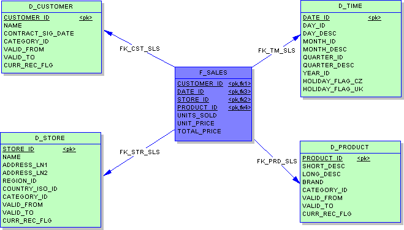
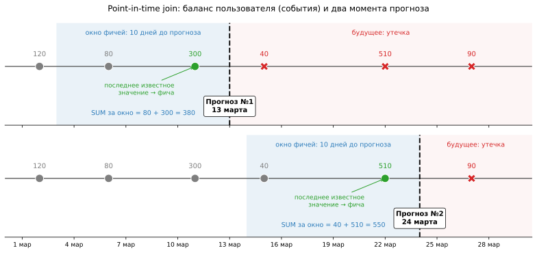
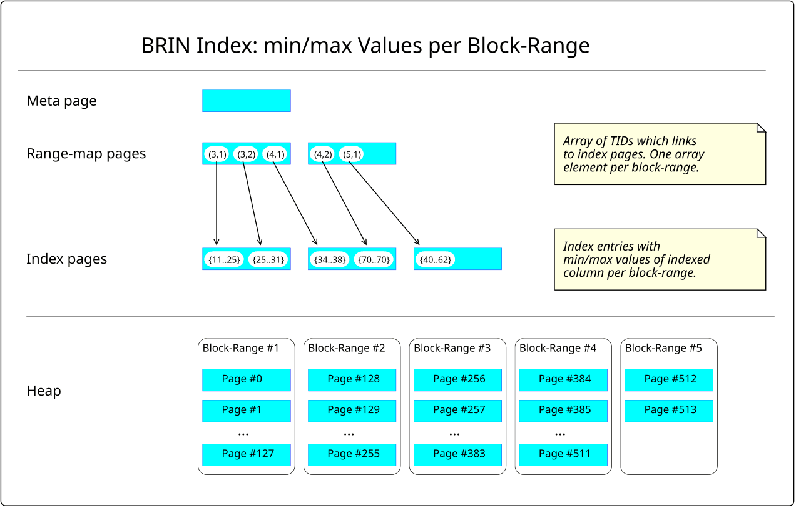
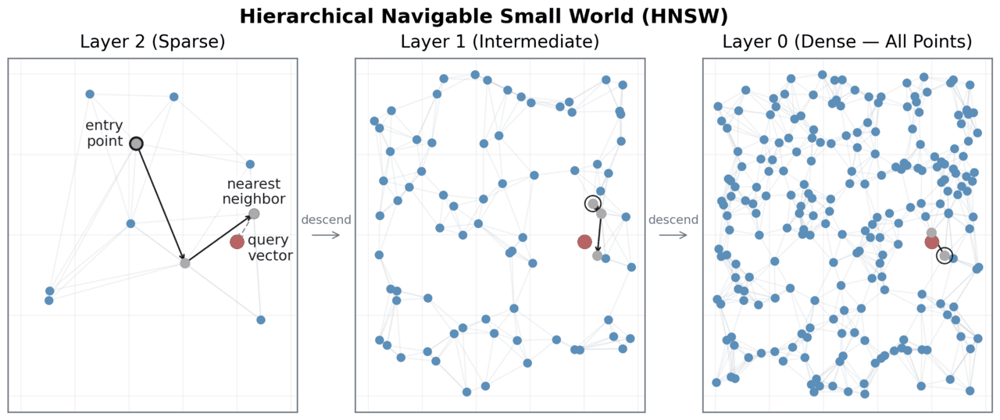

PostgreSQL
Реляционная СУБД: SQL, индексы, транзакции и MVCC, планировщик запросов, репликация и эксплуатация.
-
PostgreSQL (часто просто «Postgres») — это свободная (open source) объектно-реляционная СУБД с полной поддержкой транзакций ACID, стандарта SQL и механизмом многоверсионности MVCC (Multi-Version Concurrency Control — читатели и писатели не блокируют друг друга, потому что каждый видит свою «версию» строк).
Если совсем простыми словами: это программа-сервер, которая надёжно хранит ваши таблицы, отвечает на SQL-запросы от многих клиентов одновременно и гарантирует, что данные не превратятся в кашу, даже если кто-то пишет, пока другой читает, а сервер внезапно выключили.
Классическая реляционная СУБД умеет хранить только плоские таблицы со скалярными значениями: число, строка, дата.
Postgres добавляет к этому «объектные» возможности:
- сложные типы прямо в колонке — массивы (
integer[]), JSON-документы (jsonb), диапазоны (tstzrange), геометрия; - пользовательские типы и функции — можно объявить свой тип и научить базу его сравнивать и индексировать;
- наследование таблиц (используется редко, но существует).
На практике для ML-инженера это означает: эмбеддинг можно положить в колонку-вектор, сырой ответ API — в
jsonb, список тегов — в массив, и всё это фильтровать и индексировать SQL-ом, не вытаскивая в Python.В теории баз данных таблица называется отношением (relation), строка — кортежем (tuple), колонка — атрибутом (attribute). Отсюда и слово «реляционная». Основы самого SQL разобраны в вопросе «Что такое SQL?», здесь — только то, что специфично для Postgres.
Чем Postgres особенный
Postgres спроектирован так, что к нему можно подключать расширения (extensions) командой
CREATE EXTENSION: новые типы данных, индексы, функции. Несколько расширений, которые встречаются в ML-проектах:- pgvector — тип
vectorи индексы для поиска ближайших эмбеддингов (RAG, рекомендации); - PostGIS — геоданные: расстояния, полигоны, «все курьеры в радиусе 2 км»;
- TimescaleDB — оптимизация под временные ряды (метрики, события, телеметрия).
Благодаря этому одна и та же база закрывает задачи, для которых иначе поднимали бы три отдельные системы.
-- включаем расширение для векторного поиска (должно быть установлено на сервере) CREATE EXTENSION IF NOT EXISTS vector; CREATE TABLE doc_chunks ( id bigint GENERATED ALWAYS AS IDENTITY PRIMARY KEY, text text NOT NULL, embedding vector(384) -- эмбеддинг из sentence-transformers );Postgres работает по клиент-серверной схеме: на машине крутится сервер
postgres, клиенты (psql, Python, DBeaver) подключаются к нему по сети.Важная деталь архитектуры: на каждое соединение сервер запускает отдельный процесс ОС (backend). Процесс — тяжёлая штука: несколько мегабайт памяти и заметное время на запуск. Поэтому:
- соединений должно быть немного — по умолчанию лимит
max_connections = 100; - приложения не открывают новое соединение на каждый запрос, а используют пул соединений (connection pool) — набор заранее открытых соединений, которые переиспользуются: в SQLAlchemy он встроен, на уровне инфраструктуры ставят PgBouncer.
Вы подняли FastAPI-сервис с моделью в 8 воркерах за балансировщиком на 10 подах. Каждый воркер при каждом запросе делает
psycopg.connect(...), чтобы прочитать фичи пользователя.При 300 RPS это сотни новых процессов в секунду на стороне базы, и при 100+ одновременных запросах вы упираетесь в
FATAL: sorry, too many clients already. Лечится пулом: например, 5 соединений на воркер × 8 × 10 = 400 — и это уже повод для PgBouncer перед базой.Без пула каждый запрос открывает новое соединение, и Postgres запускает под него отдельный backend-процесс: при $\texttt{max\_connections} = 100$ сотый процесс — потолок, а сто первый клиент получает FATAL: too many clients. С пулом 5 заранее открытых соединений обслуживают поток запросов по очереди — число процессов на сервере остаётся равным 5. Сравнение с соседями
СУБД Тип нагрузки Сильные стороны Когда брать PostgreSQL OLTP (+ умеренная аналитика) строгий SQL, JSONB, расширения, богатые индексы «база по умолчанию» для сервиса и метаданных MySQL OLTP простота, огромная экосистема веб-приложений legacy-веб, где он уже стоит SQLite встраиваемая файл вместо сервера, ноль настройки локальные эксперименты, тесты, мобильные приложения ClickHouse OLAP колоночное хранение, агрегации по миллиардам строк за секунды логи, события, аналитика, большие выгрузки OLTP (Online Transaction Processing) — много мелких чтений/записей отдельных строк: «создать заказ», «обновить баланс». OLAP (Online Analytical Processing) — редкие тяжёлые запросы по огромной части данных: «средний чек по регионам за год».
Postgres хранит данные построчно: чтобы посчитать среднее по одной колонке таблицы на 500 млн строк, ему придётся прочитать с диска все колонки всех строк. Колоночная СУБД прочитает только одну колонку, да ещё и сжатую — разница бывает в десятки раз.
Поэтому типичная архитектура: Postgres — источник правды для продукта (пользователи, заказы, статусы), а для тяжёлой аналитики и сбора обучающих выборок на миллиардах событий данные реплицируют в ClickHouse, BigQuery или Spark-озеро.
Где Postgres в ML-стеке
- Backend для ML-инструментов. MLflow хранит эксперименты, метрики и реестр моделей в Postgres; Airflow — состояние DAG-ов и запусков; Feast может использовать его как online store.
- Источник датасетов. Продуктовая база, из которой SQL-запросом собирают обучающую выборку (обычно с реплики, чтобы не нагружать прод).
- Хранилище фичей и предсказаний. Таблица
user_featuresдля online-инференса, таблицаpredictionsс результатами batch-скоринга. - Векторная БД. С pgvector — хранение эмбеддингов и поиск ближайших соседей для RAG, без отдельного Qdrant/Pinecone при объёмах до миллионов векторов.
- «Postgres — это просто ещё одна SQL-база, всё как в MySQL». Нет: другие типы (
jsonb, массивы,timestamptz), другие индексы (GIN, BRIN), другая модель конкурентности (MVCC сVACUUM). Запрос, быстрый в одной СУБД, может тормозить в другой. - Гонять тяжёлую аналитику на продовой базе. Полная выгрузка таблицы событий для обучения на основном сервере тормозит пользователей. Для этого есть реплики и OLAP-хранилища.
- Открывать соединение на каждый запрос. Из-за модели «процесс на соединение» это самая частая причина падения базы под ML-сервисом.
Links
Ресурс Описание Документация PostgreSQL на русском Официальная документация, перевод Postgres Pro. Архитектура PostgreSQL Клиент-серверная модель и процессы. roadmap.sh: PostgreSQL DBA Карта тем по Postgres — от основ до администрирования. Что такое PostgreSQL в одном предложении?
Свободная объектно-реляционная СУБД с полной поддержкой ACID, богатым SQL, многоверсионностью (MVCC) и системой расширений.
Что в PostgreSQL значит «объектно-реляционная»?
Помимо плоских таблиц он поддерживает сложные типы в колонках (массивы,
jsonb, диапазоны), пользовательские типы и функции и индексы над ними. Это позволяет хранить JSON-ответы, теги и эмбеддинги прямо в базе и фильтровать их SQL-ом.Почему к Postgres обычно подключаются через пул соединений?
Потому что на каждое соединение сервер запускает отдельный процесс ОС. Открывать соединение на каждый запрос дорого, а их число ограничено
max_connections. Пул держит несколько соединений открытыми и переиспользует их.Чем OLTP отличается от OLAP и к какому классу относится Postgres?
OLTP — много коротких транзакций над отдельными строками, OLAP — тяжёлые агрегаты по большим объёмам. Postgres — строчная OLTP-СУБД; умеренную аналитику тянет, но для агрегаций по миллиардам строк лучше колоночные системы вроде ClickHouse.
Приведи примеры расширений Postgres, полезных в ML.
pgvector — хранение эмбеддингов и поиск ближайших соседей; PostGIS — геоданные; TimescaleDB — временные ряды и метрики.
Где Postgres встречается в ML-стеке?
Как backend для MLflow и Airflow, как источник данных для обучающих выборок, как хранилище фичей и предсказаний и как векторная база через pgvector.
- сложные типы прямо в колонке — массивы (
-
Тип данных колонки — это правило, которое задаёт, какие значения можно в ней хранить, сколько места они занимают, как сравниваются и какие операции над ними разрешены. Postgres строго типизирован: вставить строку
'abc'в колонкуintegerне получится, а сравнениеtextсdateпотребует явного приведения.Если совсем простыми словами: тип — это «договор» о содержимом колонки. Правильный тип ловит ошибки ещё на записи (дата «2024-13-45» просто не вставится), экономит место и делает запросы быстрее.
В Postgres есть короткий синтаксис приведения:
значение::тип. Это то же самое, что стандартныйCAST(значение AS тип).Примеры:
'42'::int,'2024-03-01'::date,created_at::date(отрезать время),price::numeric(10,2).Числа
smallint(2 байта),integer(4 байта, до ~2.1 млрд),bigint(8 байт) — целые числа.- Для первичных ключей больших таблиц (события, логи) берите
bigint: 2.1 млрд событий набираются быстрее, чем кажется, и миграцияint → bigintна живой таблице болезненна.
Автоинкрементный ключ исторически делали через
serial/bigserial. Современный способ по стандарту SQL —GENERATED ALWAYS AS IDENTITY: он честнее управляет правами на последовательность и не даёт случайно вставить id руками.CREATE TABLE events ( event_id bigint GENERATED ALWAYS AS IDENTITY PRIMARY KEY, user_id bigint NOT NULL, event_type text NOT NULL );double precision(float8) — двоичная плавающая точка, какfloatв Python/NumPy. Быстрая, но неточная:0.1 + 0.2даёт0.30000000000000004.numeric(p, s)— десятичное число произвольной точности:numeric(12, 2)хранит до 12 цифр, из них 2 после запятой. Точное, но медленнее.
Правило: деньги и всё, что суммируется в отчётах, —
numeric; метрики модели, скоры, координаты, фичи для обучения —double precisionилиreal.В таблице миллион платежей по 0.10 ₽. Если колонка
double precision,SUM(amount)вернёт что-то вроде100000.00000133288— ошибка округления накопилась. Сnumeric(12,2)сумма будет ровно100000.00. Для бухгалтерии это разница между «сошлось» и «ищем расхождение неделю».SELECT 0.1::float8 + 0.2::float8; -- 0.30000000000000004 SELECT 0.1::numeric + 0.2::numeric; -- 0.3Строки и логические значения
В Postgres
text,varcharиvarchar(n)хранятся одинаково и работают с одной скоростью. Разница только в том, чтоvarchar(n)проверяет максимальную длину.Поэтому идиоматичный выбор —
text, а если ограничение длины действительно бизнес-правило, лучше выразить его явно:CHECK (length(code) = 3). Типchar(n)дополняет строку пробелами — его почти никогда не используют.booleanпринимаетtrue,falseиNULL; не храните флаги как'Y'/'N'или0/1вinteger.Дата и время
date— только дата;interval— промежуток:'7 days','1 hour 30 minutes'.timestamp(without time zone) — «дата и время на настенных часах» без привязки к поясу. База не знает, московское это время или UTC.timestamptz(with time zone) — момент на оси времени. При записи Postgres переводит значение в UTC и хранит его; при чтении показывает в поясе текущей сессии (параметрTimeZone).
Название обманчиво:
timestamptzне хранит сам часовой пояс, он хранит UTC-момент. Правило для событий: всегдаtimestamptz.SET TimeZone = 'Europe/Moscow'; SELECT '2024-03-01 12:00:00+00'::timestamptz; -- 2024-03-01 15:00:00+03 -- интервалы и арифметика дат SELECT now() - interval '30 days'; SELECT date_trunc('day', now()); -- начало суток в поясе сессииФича «число заказов за день» считается через
date_trunc('day', created_at)илиcreated_at::date. Дляtimestamptzграница суток зависит отTimeZoneсессии: ноутбук аналитика в Москве и Airflow-воркер в UTC посчитают одни и те же заказы в разные дни — фичи на обучении и в проде разъедутся (train/serve skew).Лечение: явно фиксировать пояс —
date_trunc('day', created_at AT TIME ZONE 'UTC')илиSET TimeZone = 'UTC'в начале каждой джобы.Заказ в 22:30 UTC — это 01:30 по Москве. Момент один и тот же, но date_trunc('day', ts) режет сутки по поясу сессии: UTC-джоба отнесёт заказ к 01.03, а сессия в Europe/Moscow — к 02.03. Дневные фичи на обучении и в проде разъезжаются, поэтому пояс фиксируют явно. UUID, JSON и массивы
uuid— 128-битный идентификатор, хранится в 16 байтах (а не в 36 символах строки). Удобен, когда id генерируются на клиенте или в разных сервисах без общей последовательности. Функцияgen_random_uuid()встроена начиная с PG13.jsonхранит текст как есть: с пробелами, порядком и дублями ключей; при каждом обращении парсит заново.jsonbхранит документ в разобранном двоичном виде: чуть медленнее запись, зато быстрые чтения и поддержка индексов GIN.
Почти всегда нужен
jsonb. Основные операторы:->— достать поле какjsonb:payload -> 'device';->>— достать поле какtext:payload ->> 'os';@>— «содержит ли документ этот фрагмент»:payload @> '{"os": "ios"}';?— есть ли ключ верхнего уровня:payload ? 'promo_code'.
CREATE TABLE raw_events ( id bigint GENERATED ALWAYS AS IDENTITY PRIMARY KEY, ts timestamptz NOT NULL, payload jsonb NOT NULL ); -- фича: цена из вложенного JSON, приводим к числу SELECT (payload -> 'item' ->> 'price')::numeric AS price FROM raw_events WHERE payload @> '{"type": "purchase"}'; -- GIN-индекс ускоряет @> и ? CREATE INDEX raw_events_payload_gin ON raw_events USING gin (payload);Любой тип можно сделать массивом:
text[],int[],float8[]. Полезно для тегов, списка просмотренных товаров, небольших векторов.'ml' = ANY(tags)— есть ли элемент в массиве;unnest(tags)— «развернуть» массив в строки (одна строка на элемент);array_agg(x)— обратная операция: собрать значения группы в массив;cardinality(tags)— длина массива.
SELECT user_id, unnest(viewed_items) AS item_id FROM user_sessions WHERE 'premium' = ANY(tags);CREATE TYPE order_status AS ENUM ('new', 'paid', 'shipped')— фиксированный список значений, хранится компактно. Минус: удалить или переименовать значение сложно, поэтому для часто меняющихся справочников используютtext+CHECKили отдельную таблицу.- Хранить даты строкой (
'01.03.2024'вtext). Сравнение и сортировка идут лексикографически,'10.01' < '9.01', а интервалы не посчитать. - Использовать
timestampбез пояса для событий из разных регионов — потом невозможно понять, какое время имелось в виду. - Деньги во
float— накопленные ошибки округления в суммах. - Всё подряд в
jsonb. Поля, по которым фильтруют, джойнят и строят фичи каждый день, лучше вынести в обычные колонки: у них есть статистика для планировщика, типы и ограничения. ->вместо->>при сравнении:payload -> 'os' = 'ios'пытается превратить'ios'вjsonbи падает с ошибкойinvalid input syntax for type json(строка без кавычек внутри — невалидный JSON); нужноpayload ->> 'os' = 'ios'.
Links
Ресурс Описание Типы данных Полный справочник типов PostgreSQL. Типы даты/времени Как работают timestamptz,intervalи часовые пояса.Типы JSON Разница jsonиjsonb, операторы и индексация.Чем
numericотличается отdouble precisionи что выбрать для денег?double precision— двоичная плавающая точка: быстрая, но с ошибками округления (0.1 + 0.2 ≠ 0.3).numeric— точное десятичное число произвольной точности, но медленнее. Для денег и отчётных сумм —numeric, для фичей и метрик —double precision.Есть ли разница между
textиvarchar(n)в PostgreSQL?По хранению и скорости — нет.
varchar(n)лишь дополнительно проверяет длину, поэтому обычно берутtext, а ограничение, если оно нужно, пишут черезCHECK.Чем
timestampотличается отtimestamptz?timestamp— время без привязки к поясу.timestamptzпри записи переводится в UTC и хранится как момент времени, а при чтении показывается в поясе сессии. Сам пояс не хранится. Для событий нуженtimestamptz.Как часовой пояс сессии может испортить ML-фичи?
Функции вроде
date_trunc('day', ts)дляtimestamptzрежут сутки по поясу сессии. Если обучающая выборка собиралась в одном поясе, а продовые фичи в другом, дневные агрегаты разъедутся. Пояс нужно фиксировать явно черезAT TIME ZONEилиSET TimeZone.Чем
jsonbлучшеjson?jsonbхранит документ в разобранном двоичном виде: чтение быстрее, поддерживаются операторы@>,?и индексы GIN.jsonхранит исходный текст и парсит его при каждом обращении; он нужен, только если важно сохранить точный текст.Какая разница между операторами
->и->>?->возвращает значение какjsonb(можно идти глубже по вложенности),->>— какtext(для сравнения со строкой и приведения к числу через::numeric).Почему для первичного ключа таблицы событий лучше
bigint, и чемIDENTITYлучшеserial?integerпереполняется на ~2.1 млрд строк, а таблицы событий доходят до этого быстро, и смена типа на живой таблице дорога.GENERATED ... AS IDENTITY— стандартный SQL-способ автоинкремента, который жёстче привязан к колонке и защищает от ручной вставки id.
-
Ограничение целостности (constraint) — правило на уровне схемы таблицы, которое база проверяет при каждой вставке и изменении строки. Если новое значение нарушает правило, Postgres отклоняет весь оператор с ошибкой, и в таблицу ничего не попадает.
Основные виды:
NOT NULL,CHECK,UNIQUE,PRIMARY KEY,FOREIGN KEY, а также значение по умолчаниюDEFAULT(не ограничение, но задаётся рядом).Если совсем простыми словами: ограничения — это охранник на входе в таблицу. Он не пустит строку без обязательного поля, с отрицательной ценой или со ссылкой на несуществующего пользователя, и неважно, кто пишет — ваш сервис, чужой скрипт или стажёр из psql.
Пусть batch-джоба раз в сутки пишет скоринг оттока (churn) по пользователям.
CREATE TABLE users ( user_id bigint PRIMARY KEY, email text NOT NULL UNIQUE ); CREATE TABLE churn_predictions ( user_id bigint NOT NULL REFERENCES users (user_id) ON DELETE CASCADE, score_date date NOT NULL, model_version text NOT NULL, score real NOT NULL CHECK (score BETWEEN 0 AND 1), created_at timestamptz NOT NULL DEFAULT now(), PRIMARY KEY (user_id, score_date, model_version) );NOT NULL— у каждого предсказания есть пользователь, дата, версия и скор;CHECK (score BETWEEN 0 AND 1)— вероятность не может быть1.7(а баг в пост-процессинге именно так и выглядит);REFERENCES users— нельзя записать скор несуществующему пользователю;PRIMARY KEY (user_id, score_date, model_version)— на одну дату и версию модели у пользователя ровно один скор, дубли от повторного запуска джобы невозможны;DEFAULT now()— время записи ставит сама база.
Первичный ключ
Первичный ключ — колонка или набор колонок, однозначно идентифицирующий строку. Формально это
UNIQUE+NOT NULL+ автоматически созданный B-tree индекс. В таблице может быть только один первичный ключ.- Натуральный ключ — значение из предметной области: ИНН, email,
(user_id, score_date). - Суррогатный ключ — искусственный id без смысла:
bigint GENERATED ALWAYS AS IDENTITYилиuuid.
Натуральные ключи меняются чаще, чем кажется: пользователь меняет email, ИНН вводят с ошибкой. Если на такой ключ ссылаются десять таблиц, смена значения превращается в каскад обновлений. Поэтому для сущностей (пользователи, заказы, товары) обычно берут суррогатный ключ, а натуральный дополнительно защищают
UNIQUE.Для таблиц-фактов вроде предсказаний и фичей, наоборот, удобен составной натуральный ключ
(entity_id, date, version): он сам по себе выражает правило «одна запись на сущность в день».Внешний ключ
Внешний ключ
REFERENCES parent(col)требует, чтобы значение в дочерней таблице существовало в родительской (или былоNULL). Это гарантирует ссылочную целостность — не бывает «висячих» ссылок на удалённые строки.Что делать при удалении родителя, задаёт
ON DELETE:RESTRICT/NO ACTION(по умолчанию) — запретить удаление, пока есть дети;CASCADE— удалить детей вместе с родителем;SET NULL— обнулить ссылку у детей.
Пользователь попросил удалить свои данные. С
ON DELETE CASCADEнаchurn_predictionsодна командаDELETE FROM users WHERE user_id = 42удалит и все его предсказания. СRESTRICTудаление упадёт с ошибкой, пока вы явно не почистите дочерние таблицы, — это безопаснее для таблиц, где потеря данных недопустима (например, платежи).Postgres автоматически индексирует
PRIMARY KEYиUNIQUE, но не колонку внешнего ключа в дочерней таблице. Без индекса наchurn_predictions(user_id)каждое удаление пользователя будет полным сканированием таблицы предсказаний, аJOINпо этой колонке — медленным. Индекс на FK-колонку почти всегда стоит создать руками.UNIQUE, CHECK, NOT NULL
UNIQUEзапрещает повторяющиеся значения. Тонкость:NULLпо стандарту не равен ничему, даже другомуNULL, поэтому по умолчанию две строки сNULLв уникальной колонке не конфликтуют.Если нужно считать
NULLодинаковыми (например, «одна запись на пользователя с пустым промокодом»), в PostgreSQL 15+ естьUNIQUE NULLS NOT DISTINCT.NOT NULL— самое дешёвое и самое полезное ограничение. Колонка без него рано или поздно наполнитсяNULL, иAVG,JOINи фильтры начнут вести себя неожиданно.CHECK (выражение)— произвольное условие на значения одной строки:price > 0,score BETWEEN 0 AND 1,end_date >= start_date. Ссылаться на другие строки и таблицыCHECKне может.
EXCLUDE— обобщениеUNIQUEна произвольные операторы: например, «интервалы бронирования одной комнаты не пересекаются». Встречается редко.Upsert: идемпотентная запись
Upsert (update + insert) — «вставь строку, а если строка с таким ключом уже есть, обнови её». В Postgres это
INSERT ... ON CONFLICT (колонки ключа) DO UPDATE SET ...илиDO NOTHING. Конфликт определяется поPRIMARY KEYилиUNIQUE-ограничению, поэтому без уникального ключа upsert не работает.EXCLUDED— псевдотаблица со строкой, которую пытались вставить.INSERT INTO churn_predictions (user_id, score_date, model_version, score) VALUES (42, '2024-03-01', 'v7', 0.83) ON CONFLICT (user_id, score_date, model_version) DO UPDATE SET score = EXCLUDED.score, created_at = now();Джобы в Airflow падают и перезапускаются. Если batch-скоринг пишет обычным
INSERT, после ретрая половина пользователей получит по два скора на одну дату, и дашборд «средний скор» поедет.С первичным ключом
(user_id, score_date, model_version)иON CONFLICT DO UPDATEджоба становится идемпотентной: сколько её ни перезапускай, в таблице будет ровно одно актуальное значение на пользователя и дату. То же самое относится к таблицам фичей: пересчёт за день перезаписывает строки, а не дублирует их.Обычный INSERT при перезапуске джобы задваивает строки: 6 скоров вместо 3. С первичным ключом (user_id, score_date) и ON CONFLICT DO UPDATE повторная запись попадает в ту же строку и только обновляет score — строк по-прежнему 3. CHECK (score BETWEEN 0 AND 1) не пускает в таблицу скор 1.7 от любого писателя. Зачем ограничения ML-инженеру
Можно проверять данные в Python перед записью:
assert df.score.between(0, 1).all(). Но эта проверка живёт только в одном скрипте. Завтра данные в ту же таблицу начнёт писать другой сервис, ручнойUPDATEили новая версия пайплайна без assert-ов.Ограничение в схеме проверяется для всех писателей всегда и атомарно: либо весь батч корректен и записан, либо ни одной строки. Грязные данные, которые молча попали в таблицу фичей, потом месяцами портят обучающие выборки, — дешевле не пустить их на входе.
- Таблица без первичного ключа. Дубли появляются при первом же ретрае, upsert невозможен, а удалить одну из двух одинаковых строк неудобно.
- Ожидать, что
UNIQUEзапретит дваNULL. По умолчанию не запретит — нуженNOT NULLилиNULLS NOT DISTINCT. - Забыть индекс на колонку внешнего ключа — медленные JOIN и каскадные удаления.
ON DELETE CASCADE«везде по привычке». Одно неаккуратное удаление родителя молча сносит тысячи дочерних строк. Каскад ставят осознанно.ON CONFLICTпо колонкам без уникального ограничения — Postgres вернёт ошибкуthere is no unique or exclusion constraint matching the ON CONFLICT specification.
Links
Ресурс Описание Ограничения Официальная документация по всем видам ограничений. INSERT ... ON CONFLICT Синтаксис upsert и псевдотаблица EXCLUDED.Какие ограничения целостности есть в PostgreSQL?
NOT NULL,CHECK,UNIQUE,PRIMARY KEY,FOREIGN KEYи более редкийEXCLUDE. Рядом задаётсяDEFAULT— значение по умолчанию. Все они проверяются базой при каждой вставке и изменении строки.Что такое первичный ключ и чем натуральный ключ отличается от суррогатного?
Первичный ключ —
UNIQUE+NOT NULLс автоматическим индексом, однозначно идентифицирует строку. Натуральный ключ берётся из предметной области (email, ИНН), суррогатный — искусственный id. Для сущностей обычно берут суррогатный, потому что натуральные значения меняются.Что делает
ON DELETE CASCADEи когда он опасен?При удалении родительской строки автоматически удаляет все ссылающиеся дочерние строки. Опасен тем, что одно ошибочное удаление молча уничтожает много данных, поэтому его ставят только там, где дочерние записи без родителя не имеют смысла.
Конфликтуют ли два
NULLв колонке сUNIQUE?По умолчанию нет:
NULLне равен другомуNULL. Чтобы запретить повторныеNULL, нужноNOT NULLили, в PostgreSQL 15+,UNIQUE NULLS NOT DISTINCT.Что такое upsert и зачем он ML-пайплайнам?
INSERT ... ON CONFLICT (ключ) DO UPDATE— вставка с обновлением при конфликте по уникальному ключу. Он делает запись предсказаний и фичей идемпотентной: перезапуск джобы перезаписывает строки, а не создаёт дубли.Создаёт ли Postgres индекс для внешнего ключа?
Для
PRIMARY KEYиUNIQUE— да, а для колонки внешнего ключа в дочерней таблице — нет. Его обычно создают вручную, иначе JOIN и каскадные удаления идут полным сканированием.Почему проверять данные ограничениями в базе лучше, чем только в pandas?
Проверка в скрипте защищает только этот скрипт, а ограничение в схеме действует для всех писателей — сервисов, ручных правок, новых версий пайплайна — и срабатывает атомарно на весь оператор.
-
Нормализация — процесс проектирования схемы, при котором данные раскладываются по таблицам так, чтобы каждый факт хранился ровно в одном месте. Степень нормализации описывают нормальными формами (1НФ, 2НФ, 3НФ и выше); каждая следующая запрещает очередной вид избыточности.
Денормализация — обратный, осознанный шаг: мы дублируем данные (склеиваем таблицы в одну широкую, храним заранее посчитанные агрегаты), чтобы ускорить чтение ценой усложнения записи.
Если совсем простыми словами: нормализация — «не пиши адрес клиента в каждом заказе, запиши его один раз в карточку клиента». Денормализация — «для отчёта сделаю одну большую таблицу, где адрес уже подставлен в каждый заказ, чтобы не джойнить каждый раз».
Интернет-магазин хранит всё в одной таблице:
order_id customer_email customer_city items item_prices 1 anna@x.ru Казань "книга, ручка""500, 50"2 anna@x.ru Казань "лампа""1200"3 oleg@y.ru Омск "книга""500"Выглядит удобно, но на ней видны все проблемы, от которых защищают нормальные формы. Разберём их по шагам.
Нормальные формы по шагам
Первая нормальная форма: в каждой ячейке одно значение, нет списков через запятую и повторяющихся групп колонок (
item1,item2,item3).В примере
items = "книга, ручка"нарушает 1НФ: чтобы найти все заказы с книгой, придётся парсить строкуLIKE '%книга%', а посчитать выручку по товару — вообще нельзя без разбора текста. Исправление: отдельная таблица позицийorder_items(order_id, item_name, price), по строке на товар.Вторая нормальная форма: 1НФ + каждая неключевая колонка зависит от всего составного ключа, а не от его части.
В
order_itemsключ —(order_id, item_name). Ноpriceкниги (500) зависит только отitem_name, а не от заказа. Значит, цена повторяется в каждом заказе с книгой. Исправление: таблица товаровitems(item_id, name, price), а вorder_items— только(order_id, item_id, quantity).Третья нормальная форма: 2НФ + неключевые колонки зависят только от ключа, а не друг от друга.
В
ordersгород зависит от покупателя, а покупатель — от заказа:order_id → customer_email → customer_city. Это транзитивная зависимость: город Анны записан в каждом её заказе. Исправление: таблицаcustomers(customer_id, email, city), а вorders— толькоcustomer_id.Итог — четыре таблицы:
customers,orders,items,order_items. Каждый факт (город Анны, цена книги) хранится один раз.- Аномалия обновления. Анна переехала в Самару. В плохой таблице её город надо поменять во всех заказах; пропустили одну строку — и у Анны теперь два города.
- Аномалия вставки. Нельзя завести нового покупателя, пока он ничего не заказал: без
order_idстроку не вставить. - Аномалия удаления. Удалили единственный заказ Олега — вместе с ним пропала и информация, что Олег живёт в Омске.
В ненормализованной таблице город Анны записан в каждом её заказе: UPDATE, задевший одну строку, оставляет у Анны два города. После приведения к 3НФ город хранится один раз в customers, заказы ссылаются на клиента по customer_id — переезд меняет одну ячейку, и оба заказа сразу видят новый город. Когда денормализовать
Продуктовая (OLTP) база нормализуется: там много мелких записей, и главное — чтобы данные не противоречили сами себе.
Обучающая выборка по своей природе денормализована: модель ждёт одну строку на объект со всеми признаками сразу —
user_id, city, orders_30d, avg_check, days_since_last_order, target. Собирать её каждый раз из десяти таблиц JOIN-ами долго, а у разных людей получатся слегка разные версии. Поэтому для аналитики и ML строят витрины — заранее собранные широкие таблицы.В хранилищах данных (DWH) популярна схема «звезда»: в центре таблица фактов (события: заказы, клики — длинная и узкая), вокруг — таблицы измерений (кто, что, где, когда: пользователи, товары, даты — короткие и широкие). Факты ссылаются на измерения по ключам.
Это компромисс: измерения слегка денормализованы (город и регион пользователя в одной таблице), а запросы остаются простыми — один факт + несколько JOIN-ов.

Таблица фактов F_SALES (по строке на продажу: количество, цена) ссылается внешними ключами на измерения D_CUSTOMER, D_TIME, D_STORE и D_PRODUCT. У измерений видны VALID_FROM / VALID_TO — версионирование, нужное для point-in-time фичей. Источник: Wikimedia Commons, Star schema.png, public domain. Материализованные представления
Представление (
VIEW) — сохранённый запрос: при каждом обращении он выполняется заново. Материализованное представление (MATERIALIZED VIEW) — запрос, результат которого сохранён на диск как таблица. Читать из него быстро, но данные — это снимок на момент последнего обновления командойREFRESH MATERIALIZED VIEW.Если совсем простыми словами: обычный VIEW — это рецепт, материализованный — готовое блюдо, которое нужно время от времени готовить заново.
Каждую ночь Airflow обновляет витрину, а обучение и batch-скоринг читают готовую таблицу за секунды вместо тяжёлого запроса по всем заказам.
CREATE MATERIALIZED VIEW user_features_daily AS SELECT c.customer_id, c.city, count(o.order_id) AS orders_total, count(o.order_id) FILTER (WHERE o.created_at >= now() - interval '30 days') AS orders_30d, coalesce(avg(o.amount), 0) AS avg_check, max(o.created_at) AS last_order_at FROM customers c LEFT JOIN orders o ON o.customer_id = c.customer_id GROUP BY c.customer_id, c.city; -- уникальный индекс нужен для обновления без блокировки читателей CREATE UNIQUE INDEX ON user_features_daily (customer_id); REFRESH MATERIALIZED VIEW CONCURRENTLY user_features_daily;Обычный
REFRESH MATERIALIZED VIEWберёт эксклюзивную блокировку: пока витрина пересчитывается (а это может быть 20 минут), все запросы к ней ждут. Онлайн-сервис, читающий фичи, в это время повиснет.REFRESH ... CONCURRENTLYстроит новую версию рядом и аккуратно подменяет изменившиеся строки: читатели всё это время видят старые данные. Цена — обновление медленнее и требует уникального индекса на представлении.- Денормализовать продуктовую базу «для скорости» заранее. Дубли в OLTP почти всегда кончаются рассинхронизацией. Сначала нормализованная схема + индексы, денормализация — только под измеренную проблему и отдельными витринами.
- Считать витрину «живой». Материализованное представление не обновляется само: забыли
REFRESHв DAG — модель неделю скорит на устаревших фичах, и никто не заметит. - Использовать
now()внутри витрины для обучения. Фичаorders_30dв примере считается относительно момента обновления, а не момента события — для исторической обучающей выборки это утечка и сдвиг. Для обучения нужны point-in-time фичи на дату каждого наблюдения. - Хранить списки в строке через запятую — нарушение 1НФ, которое потом превращается в
LIKE '%...%'и невозможность агрегировать. Если нужен список, есть массивы (text[]) или отдельная таблица.
Links
Ресурс Описание Материализованные представления Официальная документация по MATERIALIZED VIEW.REFRESH MATERIALIZED VIEW Синтаксис обновления и условия для CONCURRENTLY.Нормальная форма — Википедия Определения нормальных форм с примерами. Что такое нормализация и какую проблему она решает?
Проектирование схемы, при котором каждый факт хранится в одном месте. Она убирает избыточность и связанные с ней аномалии обновления, вставки и удаления, когда копии одного факта расходятся между собой.
Сформулируй 1НФ, 2НФ и 3НФ.
1НФ — значения в ячейках атомарны, без списков и повторяющихся групп. 2НФ — плюс каждая неключевая колонка зависит от всего составного ключа, а не от его части. 3НФ — плюс неключевые колонки зависят только от ключа, без транзитивных зависимостей через другие неключевые колонки.
Что такое аномалия обновления? Приведи пример.
Когда один факт хранится в нескольких строках, и при изменении обновили не все копии. Например, город клиента записан в каждом заказе: при переезде поменяли город в части заказов — и у клиента теперь два города.
Почему обучающие выборки обычно денормализованы?
Модель ожидает одну строку на объект со всеми признаками сразу. Собирать её каждый раз из многих таблиц долго и неповторяемо, поэтому признаки заранее собирают в широкие витрины.
Чем
VIEWотличается отMATERIALIZED VIEW?Обычное представление — сохранённый запрос, который выполняется при каждом обращении и всегда даёт актуальные данные. Материализованное хранит результат на диске: читать быстро, но данные актуальны только на момент последнего
REFRESH.Зачем нужен
REFRESH MATERIALIZED VIEW CONCURRENTLYи что для него требуется?Обычный
REFRESHблокирует чтение витрины на всё время пересчёта.CONCURRENTLYпозволяет читателям видеть старые данные, пока строится новая версия. Для него нужен уникальный индекс на представлении.Что такое star schema?
Схема хранилища, где в центре длинная таблица фактов (события), а вокруг — таблицы измерений (пользователи, товары, даты), на которые факты ссылаются по ключам. Компромисс между нормализацией и простотой аналитических запросов.
-
JOIN (соединение) — операция, которая строит из двух таблиц $A$ и $B$ новую таблицу: берёт пары строк $(a, b)$ и оставляет те, для которых выполнено условие соединения
ON. ФормальноA JOIN B ON cond— это декартово произведение $A \times B$, отфильтрованное поcond; внешние JOIN-ы (LEFT,RIGHT,FULL) дополнительно возвращают строки без пары, заполняя недостающие столбцы значениемNULL.Если совсем простыми словами: JOIN «приклеивает» к каждой строке одной таблицы подходящие строки другой. Сколько подходящих строк нашлось — столько раз исходная строка и повторится в результате. Именно это «столько раз» и есть главный источник ошибок в датасетах.
Виды JOIN
Пусть у нас таблица
users(пользователи) иorders(заказы), соединяем поuser_id:Тип Что возвращает INNER JOINтолько пары, где совпадение есть с обеих сторон LEFT JOINвсе строки левой таблицы; если пары нет — справа NULLRIGHT JOINзеркально: все строки правой таблицы FULL JOINвсе строки обеих таблиц; без пары — NULLс другой стороныCROSS JOINвсе пары без условия: $\lvert A\rvert \cdot \lvert B\rvert$ строк На практике
RIGHT JOINпочти не пишут: его всегда можно переписать какLEFT JOIN, поменяв таблицы местами, и так запрос читается проще.users:user_id city 1 Москва 2 Казань 3 Омск orders:order_id user_id amount 10 1 500 11 1 700 12 4 300 INNER JOINдаст 2 строки: оба заказа пользователя 1.LEFT JOIN(users слева) даст 4 строки: два заказа пользователя 1, плюс пользователи 2 и 3 сorder_id = NULL.FULL JOINдаст 5 строк: ещё заказ 12 «осиротевшего» пользователя 4, у которогоcity = NULL.CROSS JOINдаст $3 \cdot 3 = 9$ строк.
Те же users и orders из примера. Пользователь 1 совпадает с двумя заказами — это 2 строки INNER JOIN. LEFT JOIN добавляет пользователей 2 и 3 с NULL справа (4 строки), FULL JOIN — ещё заказ 12 «несуществующего» пользователя 4 с NULL слева (5 строк). CROSS JOIN без условия дал бы все $3 \cdot 3 = 9$ пар. -- Для обучающей выборки обычно нужен LEFT JOIN от таблицы сущностей: -- пользователь без заказов — тоже объект, у него просто фича = 0. SELECT u.user_id, u.city, o.order_id, o.amount FROM users AS u LEFT JOIN orders AS o ON o.user_id = u.user_id;- Если столбцы соединения называются одинаково, можно писать
JOIN orders USING (user_id)— в результате будет один столбецuser_idвместо двух. - Self-join — соединение таблицы с самой собой через разные алиасы. Например, найти пары заказов одного пользователя, сделанные в течение часа:
FROM orders a JOIN orders b ON a.user_id = b.user_id AND b.created_at BETWEEN a.created_at AND a.created_at + interval '1 hour' AND a.order_id < b.order_id. Условиеa.order_id < b.order_idубирает пары «заказ сам с собой» и дубли $(a,b)$/$(b,a)$.
Semi-join и anti-join
- Semi-join («полу-соединение») — вернуть строки левой таблицы, у которых есть хотя бы одна пара справа, но не приклеивать правую таблицу и не размножать строки. В SQL —
WHERE EXISTS (...). - Anti-join — вернуть строки левой таблицы, у которых пары нет. В SQL —
WHERE NOT EXISTS (...)илиLEFT JOIN ... WHERE right.key IS NULL.
Простыми словами: semi-join отвечает на вопрос «кто хоть раз покупал?», anti-join — «кто ни разу не покупал?». Ни тот, ни другой не меняет число строк левой таблицы в большую сторону.
-- semi-join: пользователи, у которых был хотя бы один заказ SELECT u.user_id FROM users u WHERE EXISTS (SELECT 1 FROM orders o WHERE o.user_id = u.user_id); -- anti-join: пользователи без заказов (кандидаты на реактивацию) SELECT u.user_id FROM users u WHERE NOT EXISTS (SELECT 1 FROM orders o WHERE o.user_id = u.user_id); -- эквивалентный anti-join через LEFT JOIN SELECT u.user_id FROM users u LEFT JOIN orders o ON o.user_id = u.user_id WHERE o.user_id IS NULL;Можно написать
SELECT DISTINCT u.* FROM users u JOIN orders o ..., и результат совпадёт. Но так база сначала честно размножит строки (пользователь с 1000 заказов превратится в 1000 строк), а потом будет их схлопывать.EXISTSже останавливается на первой найденной паре, и планировщик Postgres умеет превращать его в специальный узелSemi Join/Anti Join. Это и быстрее, и явно выражает намерение.Главная ловушка: размножение строк (fan-out)
Fan-out («веерное размножение») — ситуация, когда ключ соединения в правой таблице не уникален, и каждая левая строка превращается в $k$ строк, где $k$ — число совпадений. При связи один-ко-многим размер результата равен не $\lvert A \rvert$, а $\sum_{a \in A} \max(1, k_a)$ для
LEFT JOIN.Простыми словами: если у пользователя 5 заказов, после JOIN с заказами он встретится 5 раз. Всё, что лежало в его строке (доход, возраст, таргет), тоже продублируется 5 раз — и любая сумма или среднее по этим столбцам исказится.
Считаем выручку по пользователю и одновременно число его обращений в поддержку. Данные для
user_id = 1:orders: 2 заказа на 500 и 700 → реальная выручка 1200;tickets: 3 обращения в поддержку.
Наивный запрос соединяет обе таблицы с пользователем сразу. Каждый из 2 заказов склеивается с каждым из 3 тикетов, получается $2 \cdot 3 = 6$ строк:
user_id amount ticket_id 1 500 t1 1 500 t2 1 500 t3 1 700 t1 1 700 t2 1 700 t3 SUM(amount) = 3600вместо 1200,COUNT(ticket_id) = 6вместо 3. Модель получит фичу, завышенную ровно во столько раз, сколько тикетов у пользователя, — то есть фичи начнут «протекать» друг в друга.Два LEFT JOIN «многих» к одному пользователю склеивают каждый заказ с каждым тикетом: $2 \cdot 3 = 6$ строк, SUM(amount) = 3600 вместо 1200 и COUNT(ticket_id) = 6 вместо 3. Лечение — сначала свернуть orders и tickets до уровня user_id, потом соединять агрегаты один-к-одному: одна строка, 1200 и 3. -- НЕПРАВИЛЬНО: две таблицы "многие" к одной сущности -> декартов взрыв SELECT u.user_id, SUM(o.amount) AS revenue, -- 3600, а не 1200 COUNT(t.ticket_id) AS tickets_cnt -- 6, а не 3 FROM users u LEFT JOIN orders o ON o.user_id = u.user_id LEFT JOIN tickets t ON t.user_id = u.user_id GROUP BY u.user_id;Правило: к таблице-сущности присоединяй только то, что уже имеет ту же гранулярность (grain — «одна строка = один что?»). Если витрина «одна строка = один пользователь», то заказы и тикеты сначала сворачиваем до уровня пользователя в отдельных подзапросах/CTE, и только потом соединяем 1-к-1. Тогда размножаться нечему.
WITH o AS ( SELECT user_id, SUM(amount) AS revenue, COUNT(*) AS orders_cnt FROM orders GROUP BY user_id ), t AS ( SELECT user_id, COUNT(*) AS tickets_cnt FROM tickets GROUP BY user_id ) SELECT u.user_id, COALESCE(o.revenue, 0) AS revenue, -- 1200 COALESCE(o.orders_cnt, 0) AS orders_cnt, -- 2 COALESCE(t.tickets_cnt, 0) AS tickets_cnt -- 3 FROM users u LEFT JOIN o ON o.user_id = u.user_id LEFT JOIN t ON t.user_id = u.user_id;Дешёвые проверки, которые стоит делать при каждой сборке датасета:
- Считать строки до и после.
SELECT COUNT(*)от таблицы сущностей и от результата JOIN. Если «одна строка = один пользователь», числа обязаны совпасть. - Проверять уникальность ключа справа:
SELECT user_id, COUNT(*) FROM dim GROUP BY user_id HAVING COUNT(*) > 1должен вернуть пусто. - Закрепить уникальность в схеме:
PRIMARY KEYилиUNIQUEна ключе справочника — тогда дубль просто не вставится. - В pandas то же самое делает
pd.merge(..., validate="one_to_one")/"many_to_one"— бросает ошибку при неожиданном размножении.
Условие в ON против WHERE
Для
INNER JOINневажно, писать фильтр вONили вWHERE. ДляLEFT JOIN— критично:- фильтр в
ONограничивает, какие строки справа приклеить; левые строки сохраняются все; - фильтр в
WHEREприменяется после соединения; у левых строк без пары правые столбцы равныNULL, условиеo.status = 'paid'наNULLдаёт неTRUE, и такие строки выкидываются.
Итог:
LEFT JOIN orders o ... WHERE o.status = 'paid'молча превращается вINNER JOIN— пользователи без оплаченных заказов исчезают из выборки, хотя для модели они полноценные объекты с фичей «0 заказов».-- правильно: все пользователи остаются, считаются только оплаченные заказы SELECT u.user_id, COUNT(o.order_id) AS paid_orders FROM users u LEFT JOIN orders o ON o.user_id = u.user_id AND o.status = 'paid' -- фильтр правой таблицы — в ON GROUP BY u.user_id;SQL описывает что соединить, а планировщик выбирает как. В Postgres три алгоритма:
- Nested Loop — для каждой левой строки ищем пары справа (часто по индексу). Хорош, когда слева мало строк.
- Hash Join — строим хеш-таблицу по меньшей стороне и прогоняем через неё большую. Типичный выбор для больших соединений по равенству.
- Merge Join — обе стороны отсортированы по ключу и сливаются «молнией». Выгоден, когда данные уже отсортированы (например, по индексу).
Как увидеть выбранный алгоритм и понять, почему он такой, — в вопросе про
EXPLAIN.- «JOIN не меняет число строк». Меняет:
INNERможет уменьшить, связь один-ко-многим — увеличить. Всегда сверяйCOUNT(*)до и после. - Джойнить таргет с «многими» до агрегации. Таргет пользователя продублируется, и строки с большим числом событий получат больший вес в обучении.
- Лечить дубли через
DISTINCTв конце. Это маскирует баг, а не исправляет его: суммы, посчитанные доDISTINCT, уже искажены. - Соединять по неполному ключу. Если справочник версионирован (
user_id,valid_from), JOIN только поuser_idразмножит строки по числу версий. Нужен ключ целиком или point-in-time условие. NULLв ключе.NULL = NULLне истинно, поэтому строки сNULLв ключе не соединяются ни с чем — даже друг с другом.
Ресурс Описание Документация PostgreSQL: соединения таблиц Официальное описание всех видов JOIN, USING, NATURAL. Visual JOIN Интерактивная визуализация видов соединений. Чем INNER JOIN отличается от LEFT JOIN?
INNER оставляет только строки, у которых нашлась пара в обеих таблицах. LEFT сохраняет все строки левой таблицы, а у строк без пары столбцы правой таблицы заполняет NULL. Для обучающих выборок обычно берут LEFT JOIN от таблицы сущностей, чтобы не потерять объекты без событий.
Почему после JOIN может стать больше строк, чем было в левой таблице?
Если ключ соединения в правой таблице не уникален (связь один-ко-многим), каждая левая строка повторяется столько раз, сколько у неё совпадений. Это fan-out: все значения левой строки дублируются, и SUM/COUNT/AVG по ним искажаются.
Как правильно собрать витрину «одна строка = один пользователь» из заказов и тикетов?
Сначала агрегировать каждую таблицу «многих» до уровня пользователя в отдельном CTE или подзапросе, а потом соединять агрегаты с пользователями один-к-одному. Прямое соединение двух таблиц «многих» даёт декартово произведение их строк внутри каждого пользователя.
Что такое semi-join и anti-join и как их записать?
Semi-join возвращает строки левой таблицы, у которых есть хотя бы одна пара, без размножения —
WHERE EXISTS (...). Anti-join возвращает строки без пары —WHERE NOT EXISTS (...)илиLEFT JOIN ... WHERE right.key IS NULL.Почему фильтр по правой таблице в WHERE ломает LEFT JOIN?
WHERE выполняется после соединения. У левых строк без пары правые столбцы равны NULL, условие на них не даёт TRUE, и строки отбрасываются — LEFT JOIN фактически превращается в INNER. Фильтр правой таблицы надо переносить в ON.
Как быстро проверить, что JOIN не испортил датасет?
Сравнить COUNT() до и после соединения, проверить уникальность ключа справа запросом с GROUP BY ... HAVING COUNT() > 1, а в схеме закрепить уникальность через PRIMARY KEY или UNIQUE. В pandas аналог — параметр validate у merge.
Какие алгоритмы соединения использует Postgres?
Nested Loop (хорош при маленькой внешней стороне и индексе на внутренней), Hash Join (большие соединения по равенству) и Merge Join (обе стороны отсортированы по ключу). Выбор делает планировщик по статистике, увидеть его можно в EXPLAIN.
-
GROUP BYразбивает строки на группы с одинаковыми значениями перечисленных столбцов и превращает каждую группу в одну строку результата. Агрегатная функция (COUNT,SUM,AVG,MIN,MAXи др.) принимает на вход множество значений группы и возвращает одно число.HAVING— фильтр, который применяется к уже сформированным группам.Если совсем простыми словами:
GROUP BY user_idраскладывает все заказы по «стопкам», по одной на пользователя, а агрегаты считают что-то по каждой стопке — сколько в ней заказов, какая сумма, какой максимальный чек.HAVINGпотом выбрасывает неинтересные стопки целиком.orders:user_id amount status 1 500 paid 1 700 paid 1 300 refund 2 900 paid После
GROUP BY user_id:user_id orders_cnt revenue max_check 1 3 1500 700 2 1 900 900 Четыре строки заказов превратились в две строки пользователей — именно такая гранулярность («одна строка = одна сущность») нужна для табличной модели.
SELECT user_id, COUNT(*) AS orders_cnt, SUM(amount) AS revenue, MAX(amount) AS max_check FROM orders GROUP BY user_id;Логический порядок выполнения
Запрос пишется в одном порядке, а логически вычисляется в другом:
FROM/JOIN— собрать исходные строки;WHERE— отфильтровать строки;GROUP BY— разложить по группам;- агрегаты — посчитать по каждой группе;
HAVING— отфильтровать группы;SELECT— вычислить выходные выражения и алиасы;DISTINCT— убрать дубли;ORDER BY— отсортировать;LIMIT/OFFSET— обрезать.
Это логический порядок: реальный план оптимизатор может перестроить, но результат обязан быть таким, как если бы шаги шли именно так.
- В
WHEREнельзя использовать агрегаты (WHERE COUNT(*) > 5— ошибка): на шаге 2 групп ещё нет. - В
WHEREнельзя сослаться на алиас изSELECT: он вычисляется на шаге 6. А вORDER BY— можно. - В
SELECTприGROUP BYможно выводить только столбцы группировки и агрегаты. Исключение Postgres: если сгруппировали по первичному ключу таблицы, можно выводить любые её столбцы — они функционально от него зависят. - Postgres дополнительно разрешает ссылаться в
GROUP BYна алиас или номер столбца изSELECT(GROUP BY 1), но это расширение, а не стандарт.
WHERE против HAVING
WHEREотсекает строки до группировки: «считай только оплаченные заказы».HAVINGотсекает группы после агрегации: «оставь только пользователей, у которых больше 2 заказов».
Условие без агрегатов почти всегда стоит писать в
WHERE: база выкинет лишние строки раньше и будет группировать меньше данных.-- активные покупатели: >= 2 оплаченных заказов на сумму от 1000 SELECT user_id, COUNT(*) AS paid_cnt, SUM(amount) AS paid_revenue FROM orders WHERE status = 'paid' -- строки: до группировки GROUP BY user_id HAVING COUNT(*) >= 2 -- группы: после агрегации AND SUM(amount) >= 1000;Тот же запрос «активные покупатели» по шагам: WHERE status = 'paid' выкидывает строку refund ещё до группировки, GROUP BY раскладывает оставшиеся строки по стопкам user_id, агрегаты сворачивают каждую стопку в одну строку (2 заказа на 1200 и 1 заказ на 900), а HAVING отбрасывает группу пользователя 2 целиком. Три разных COUNT
COUNT(*)— число строк в группе,NULL-ы не важны.COUNT(col)— число строк, гдеcol IS NOT NULL.COUNT(DISTINCT col)— число различных непустых значений.
Пример: у пользователя 5 сессий, в 2 из них
promo_code = NULL, в остальных кодыA,A,B. ТогдаCOUNT(*) = 5,COUNT(promo_code) = 3,COUNT(DISTINCT promo_code) = 2. Это три разные фичи: «активность», «сколько раз пользовался промокодом», «сколько разных промокодов пробовал».Агрегаты, полезные для фичей
Агрегат Что делает Пример фичи percentile_cont(0.5) WITHIN GROUP (ORDER BY x)интерполированный квантиль (медиана) медианный чек percentile_disc(0.9) WITHIN GROUP (ORDER BY x)квантиль как реальное значение из данных p90 времени ответа mode() WITHIN GROUP (ORDER BY x)самое частое значение любимая категория stddev_samp(x),var_samp(x)разброс волатильность трат array_agg(x ORDER BY t)собрать значения в массив последовательность событий для RNN string_agg(x, ' ' ORDER BY t)склеить строки история поисковых запросов bool_or(cond),bool_and(cond)«хоть раз» / «всегда» был ли хоть один возврат Условная агрегация: FILTER
Конструкция
агрегат(...) FILTER (WHERE условие)считает агрегат только по тем строкам группы, которые удовлетворяют условию. Это стандарт SQL:2003, в Postgres поддерживается с версии 9.4.Простыми словами: за один проход по таблице можно получить сразу десяток фичей «сколько / на сколько по каждому условию» — вместо десятка отдельных запросов или громоздких
CASE WHEN.SELECT user_id, COUNT(*) AS orders_cnt, COUNT(*) FILTER (WHERE status = 'refund') AS refunds_cnt, SUM(amount) FILTER (WHERE status = 'paid') AS paid_revenue, AVG(amount) FILTER (WHERE created_at >= now() - interval '30 days') AS avg_check_30d, COUNT(*) FILTER (WHERE status = 'refund')::numeric / COUNT(*) AS refund_rate FROM orders GROUP BY user_id;SUM(amount) FILTER (WHERE status = 'paid')— то же, чтоSUM(CASE WHEN status = 'paid' THEN amount END): уCASEбезELSEдля остальных строк получаетсяNULL, а агрегатыNULLпропускают.FILTERчитается чище и работает с любым агрегатом, включаяarray_aggиpercentile_cont. Приведение::numericвrefund_rateнужно, чтобы не получить целочисленное деление ($1/3 = 0$).DISTINCT ON — специфика Postgres
SELECT DISTINCT ON (expr) ... ORDER BY expr, ...оставляет по одной строке на каждое значениеexpr— первую в порядкеORDER BY. Это расширение Postgres, в стандарте его нет.Простыми словами: «для каждого пользователя дай одну строку — самую свежую». Классическая задача «последняя запись в группе» решается одной строчкой.
-- последний заказ каждого пользователя SELECT DISTINCT ON (user_id) user_id, order_id, amount, created_at FROM orders ORDER BY user_id, created_at DESC, order_id DESC; -- order_id — тай-брейкер- Выражения в
DISTINCT ON (...)обязаны совпадать с началомORDER BY, иначе Postgres выдаст ошибку. - Без тай-брейкера (
order_id DESC) при двух заказах с одинаковымcreated_atрезультат недетерминирован: сегодня вернётся один заказ, завтра — другой, и датасет перестанет воспроизводиться. - В других СУБД (ClickHouse, Spark SQL, BigQuery) синтаксис другой — там то же делают через
ROW_NUMBER()(см. оконные функции).
GROUPING SETS и ROLLUP
GROUP BY ROLLUP (country, city)посчитает агрегаты сразу на трёх уровнях: по паре (страна, город), по стране (итог) и общий итог; в «свёрнутых» столбцах будетNULL.GROUPING SETS ((country), (device), ())— произвольный набор группировок,CUBE— все комбинации. Для ML это нужно редко (скорее для отчётов), но полезно для target encoding на нескольких уровнях иерархии за один проход. Отличить «настоящий»NULLот итогового помогает функцияGROUPING(col).- Агрегат в
WHERE.WHERE SUM(amount) > 1000— ошибка; условие на агрегат пишется вHAVING. COUNT(col)вместоCOUNT(*). Если вcolбываютNULL, счётчик тихо занижается.AVGпо целым как «целое». В PostgresAVG(int)возвращаетnumeric, а вот делениеSUM(a)/COUNT(*)для целых — целочисленное. Приводи кnumericилиfloat8.- Группировка после размножающего JOIN.
GROUP BYне «чинит» fan-out: суммы уже посчитаны по дублям. Агрегируй таблицы «многих» до соединения. DISTINCT ON/LIMITбез полногоORDER BY. Результат зависит от физического порядка строк и меняется от запуска к запуску.
Ресурс Описание Документация: GROUP BY и HAVING Группировка, GROUPING SETS, ROLLUP, CUBE. Документация: агрегатные функции Полный список агрегатов, включая WITHIN GROUP. В каком логическом порядке выполняются части SELECT-запроса?
FROM и JOIN, затем WHERE, GROUP BY, вычисление агрегатов, HAVING, SELECT, DISTINCT, ORDER BY и в конце LIMIT/OFFSET. Отсюда следует, что в WHERE нельзя использовать агрегаты и алиасы из SELECT, а в ORDER BY алиасы доступны.
Чем WHERE отличается от HAVING?
WHERE фильтрует отдельные строки до группировки и не может содержать агрегаты. HAVING фильтрует уже сформированные группы и работает с агрегатами. Условия без агрегатов выгоднее писать в WHERE: база обработает меньше строк.
Чем отличаются COUNT(*), COUNT(col) и COUNT(DISTINCT col)?
COUNT(*) считает все строки группы, COUNT(col) — только строки с непустым col, COUNT(DISTINCT col) — число различных непустых значений. Это три разные фичи, и перепутать их — значит получить заниженный или завышенный счётчик.
Что такое FILTER и зачем он при сборке фичей?
Это условная агрегация: агрегат(...) FILTER (WHERE условие) считает только по строкам, прошедшим условие. Позволяет за один проход по таблице получить много фичей вида «число возвратов», «выручка за 30 дней», «доля отмен» без отдельных запросов и громоздких CASE WHEN.
Как в Postgres взять последнюю запись для каждого пользователя?
Через DISTINCT ON (user_id) с ORDER BY user_id, created_at DESC и тай-брейкером по уникальному столбцу. Выражение в DISTINCT ON должно совпадать с началом ORDER BY. Переносимая альтернатива — ROW_NUMBER() в подзапросе и фильтр rn = 1.
Как посчитать медиану и другие квантили в Postgres?
Упорядоченными агрегатами: percentile_cont(0.5) WITHIN GROUP (ORDER BY x) даёт интерполированную медиану, percentile_disc возвращает реальное значение из данных, mode() — самое частое значение.
Почему SUM(a) / COUNT(*) может вернуть 0 вместо 0.33?
Если оба операнда целые, Postgres делает целочисленное деление с отбрасыванием дробной части. Нужно привести хотя бы один операнд к numeric или float8, например SUM(a)::numeric / COUNT(*).
-
NULL— специальный маркер «значение неизвестно или отсутствует». Это не ноль, не пустая строка и неfalse. Любое сравнение или арифметика сNULLдаётNULL:NULL + 1 = NULL,NULL = NULL→NULL,NULL <> 5→NULL. Поэтому логика SQL трёхзначная: кромеTRUEиFALSEесть третье значениеUNKNOWN(которое и представленоNULLтипаboolean).Если совсем простыми словами:
NULL— это «не знаю». Равен ли «не знаю» пяти? Не знаю. Равен ли «не знаю» другому «не знаю»? Тоже не знаю.WHEREпропускает строку только если условие точноTRUE, поэтому все «не знаю» тихо выпадают из результата.Трёхзначная логика
A B A AND B A OR B NOT A TRUE NULL NULL TRUE FALSE FALSE NULL FALSE NULL TRUE NULL NULL NULL NULL NULL Как запомнить:
NULL— это «может быть и TRUE, и FALSE». Если ответ не зависит от него, результат определён:FALSE AND ?точноFALSE,TRUE OR ?точноTRUE. Если зависит — результатNULL.users:user_id age 1 25 2 40 3 NULL WHERE age < 30→ только пользователь 1.WHERE NOT (age < 30)→ только пользователь 2.
Пользователь 3 не попал ни в одну из двух «взаимоисключающих» выборок: для него оба условия
NULL. Если так бьют выборку на train/test или на сегменты, часть объектов бесследно пропадает.Для age = NULL и условие age < 30, и его отрицание дают NULL, а WHERE пропускает только TRUE — пользователь 3 выпадает из обеих «взаимоисключающих» выборок. Та же логика ломает NOT IN: 5 NOT IN (1, 2, NULL) раскрывается в TRUE AND TRUE AND NULL = NULL, и строка отбрасывается. Безопасная замена — NOT EXISTS. Как правильно сравнивать с NULL
col = NULLвсегда даётNULL, то есть не находит ничего. Правильно:col IS NULL/col IS NOT NULL.- Чтобы сравнить два столбца, где оба могут быть
NULL, используютa IS DISTINCT FROM b/a IS NOT DISTINCT FROM b. Они считаютNULLобычным значением:NULL IS NOT DISTINCT FROM NULL→TRUE,1 IS DISTINCT FROM NULL→TRUE.
Типичный кейс — поиск изменившихся записей между двумя снапшотами:
WHERE old.email IS DISTINCT FROM new.email. С обычным<>строки, где email былNULLи стал заполнен, не найдутся.NULL в агрегатах
Все агрегаты, кроме
COUNT(*), игнорируютNULL. ДляAVGэто означает деление на число непустых значений:\[ \text{AVG}(x) = \frac{\sum_{x_i \neq \text{NULL}} x_i}{\#\{i : x_i \neq \text{NULL}\}} \]
То есть
NULLне считается нулём — он просто выбрасывается и из числителя, и из знаменателя. Если в группе все значенияNULL, тоSUM,AVG,MAXвернутNULL, аCOUNT(col)— 0.Пользователь поставил оценки 3 товарам и 2 товара купил, но не оценил:
order_id rating 1 5 2 4 3 3 4 NULL 5 NULL AVG(rating) = (5+4+3)/3 = 4.0— «средняя оценка, когда оценивал».AVG(COALESCE(rating, 0)) = 12/5 = 2.4— «оценка с нулями за молчание».COUNT(rating)::numeric / COUNT(*) = 0.6— «доля оценённых заказов».
Все три — осмысленные, но разные фичи. Ошибка — не выбрать сознательно, а получить одну из них случайно, заполнив пропуски нулями «чтобы модель не падала».
Для модели факт отсутствия значения часто информативен: пользователь, который не заполнил доход, может отличаться от того, кто заполнил. Поэтому вместо (или вместе с) заполнением делают отдельный флаг:
(income IS NULL)::int AS income_missing. Градиентные бустинги (LightGBM, CatBoost, XGBoost) умеют работать с пропусками нативно — тамNULLлучше отдать какNaN, а не заменять нулём.COALESCE и NULLIF
COALESCE(a, b, c)возвращает первый не-NULLаргумент. Используется для заполнения:COALESCE(orders_cnt, 0)послеLEFT JOIN— у пользователя без заказов счётчик должен быть 0, а неNULL.NULLIF(a, b)возвращаетNULL, еслиa = b, иначеa. Главное применение — защита от деления на ноль:clicks::numeric / NULLIF(views, 0). Приviews = 0получитсяNULL(«CTR не определён») вместо ошибкиdivision by zero, которая уронит весь запрос.
SELECT u.user_id, COALESCE(s.views, 0) AS views, COALESCE(s.clicks, 0) AS clicks, s.clicks::numeric / NULLIF(s.views, 0) AS ctr, -- NULL, если просмотров 0 (s.user_id IS NULL)::int AS no_activity -- флаг пропуска FROM users u LEFT JOIN user_stats s ON s.user_id = u.user_id;Ловушка NOT IN
Запрос «пользователи, которые не в чёрном списке»:
SELECT * FROM users WHERE user_id NOT IN (SELECT user_id FROM blacklist)Если в
blacklist.user_idесть хотя бы одинNULL, запрос вернёт ноль строк. Почему:x NOT IN (1, 2, NULL)раскрывается вx <> 1 AND x <> 2 AND x <> NULL. Последнее слагаемое —NULL, значит всё выражение в лучшем случаеNULL, но никогда неTRUE.Лечение: использовать
NOT EXISTS— он сравнивает построчно иNULL-ов не боится. Или явно добавитьWHERE user_id IS NOT NULLв подзапрос.IN(безNOT) такой проблемы не имеет.-- безопасный anti-join SELECT u.* FROM users u WHERE NOT EXISTS ( SELECT 1 FROM blacklist b WHERE b.user_id = u.user_id );NULL в сортировке, UNIQUE и JOIN
В Postgres
NULLпри сортировке считается больше любого значения: приORDER BY x(ASC) пропуски в конце, приORDER BY x DESC— в начале. Это ловушка для «топ-10 по выручке»:ORDER BY revenue DESC LIMIT 10может вернуть десять пользователей сrevenue = NULL. Управлять явно:ORDER BY revenue DESC NULLS LAST. В других СУБД (MySQL, SQL Server) поведение обратное — ещё одна причина писатьNULLS FIRST/LASTявно.- UNIQUE: по умолчанию два
NULLсчитаются различными, поэтому в столбец сUNIQUEможно вставить сколько угодноNULL. С PG 15 можно запретить это:UNIQUE NULLS NOT DISTINCT. - JOIN: условие
a.key = b.keyдляNULLне выполняется, поэтому строки сNULLв ключе не соединяются ни с чем, даже с таким жеNULLс другой стороны. Если это нужно —ON a.key IS NOT DISTINCT FROM b.key(но такой JOIN хуже использует индексы). - GROUP BY и DISTINCT, наоборот, собирают все
NULLв одну группу.
WHERE col = NULL. Никогда не находит строк; нужноIS NULL.COALESCE(x, 0)по умолчанию везде. Меняет смысл фичи (среднее с нулями ≠ среднее по известным) и прячет от модели информацию о пропуске.NOT IN (подзапрос). ОдинNULLв подзапросе — и результат пуст. ИспользуйNOT EXISTS.- Выборки «A» и «не A» в сумме дают всё. Не дают: строки с
NULLв условии выпадают из обеих. ORDER BY ... DESC LIMIT NбезNULLS LASTв Postgres поднимает пропуски наверх.a + b, где одно из слагаемыхNULL. Весь результатNULL; то же со склейкой строк||. Для строк естьconcat(), которыйNULLпропускает.
Ресурс Описание Документация: операторы сравнения, IS DISTINCT FROM Правила сравнения с NULL. Документация: COALESCE и NULLIF Условные выражения Postgres. Что такое NULL и почему NULL = NULL не TRUE?
NULL — маркер неизвестного или отсутствующего значения, а не ноль и не пустая строка. Сравнение с неизвестным даёт неизвестный результат, поэтому NULL = NULL возвращает NULL (UNKNOWN), и WHERE такую строку не пропускает. Проверять нужно через IS NULL.
Как агрегатные функции обрабатывают NULL?
Все агрегаты, кроме COUNT(*), пропускают NULL. AVG делит сумму непустых значений на их количество, а не на число строк. Если все значения группы NULL, SUM/AVG/MAX вернут NULL, а COUNT(col) — ноль.
Почему NOT IN с подзапросом может вернуть пустой результат?
x NOT IN (1, 2, NULL) раскрывается в x <> 1 AND x <> 2 AND x <> NULL; последнее даёт NULL, и всё условие никогда не становится TRUE. Решение — NOT EXISTS или явный фильтр IS NOT NULL в подзапросе.
Как защититься от деления на ноль при расчёте CTR?
Обернуть знаменатель в NULLIF(views, 0): при нуле он станет NULL, и результат деления будет NULL вместо ошибки. Дополнительно числитель приводят к numeric, чтобы деление не было целочисленным.
Всегда ли стоит заполнять пропуски через COALESCE(x, 0)?
Нет. Для счётчиков после LEFT JOIN ноль корректен, но для средних, рейтингов или дохода ноль меняет смысл фичи. Часто лучше оставить NaN для бустинга и добавить отдельный флаг пропуска, потому что сам факт отсутствия значения бывает предсказательным.
Где окажутся NULL при ORDER BY x DESC в Postgres?
В начале: Postgres считает NULL больше любых значений. Поэтому топ-N по убыванию может вернуть одни пропуски. Нужно явно писать NULLS LAST.
Что делает IS DISTINCT FROM?
Сравнивает значения, считая NULL обычным значением: два NULL не различаются, NULL и число различаются. Используется для поиска изменившихся записей и сравнения столбцов, которые могут быть пустыми.
-
Подзапрос (subquery) —
SELECT, вложенный в другой запрос: вWHERE,FROM,SELECTилиJOIN. CTE (Common Table Expression, «общее табличное выражение») — именованный подзапрос, объявленный заранее в блокеWITH имя AS (...)и доступный ниже по имени как временная таблица, живущая только в рамках одного запроса.Если совсем простыми словами: подзапрос — это «запрос внутри запроса», а CTE — тот же подзапрос, которому дали имя и вынесли наверх. Результат у них обычно одинаковый, разница — в читаемости и в паре важных нюансов выполнения.
Виды подзапросов
- Скалярный — возвращает ровно одно значение (одна строка, один столбец) и может стоять там, где ожидается число:
SELECT amount / (SELECT AVG(amount) FROM orders) AS rel_amount. Если вернёт больше одной строки — ошибка выполнения. - Табличный — возвращает набор строк и стоит в
FROM(как производная таблица, которой обязательно дать алиас) или вIN (...). - Коррелированный — ссылается на столбцы внешнего запроса, поэтому логически вычисляется заново для каждой внешней строки. Пример:
(SELECT COUNT(*) FROM orders o WHERE o.user_id = u.user_id)внутриSELECT ... FROM users u.
users: 3 пользователя.orders: у пользователя 1 — 2 заказа, у 2 — 0, у 3 — 1.user_id orders_cnt 1 2 2 0 3 1 Приятная особенность:
COUNT(*)в скалярном подзапросе для пользователя без заказов вернёт 0, а неNULL, — в отличие от вариантаLEFT JOIN+GROUP BY, где понадобился быCOALESCE.SELECT u.user_id, (SELECT COUNT(*) FROM orders o WHERE o.user_id = u.user_id) AS orders_cnt FROM users u;«Вычисляется для каждой строки» — это логическая семантика. Postgres не всегда умеет переписать такой подзапрос в JOIN: скалярный подзапрос в
SELECTчаще всего так и выполняется по разу на строку (в плане —SubPlan). На 10 млн пользователей без индекса поorders.user_idэто 10 млн полных просмотров таблицы заказов. Для массовой сборки фичей надёжнее один раз сгруппироватьordersпоuser_idи сделатьLEFT JOIN.EXISTS против IN
WHERE user_id IN (SELECT user_id FROM orders)иWHERE EXISTS (SELECT 1 FROM orders o WHERE o.user_id = u.user_id)для положительного условия дают одинаковый результат, и современный Postgres обычно строит для обоих один и тот же планSemi Join.- Для отрицания разница принципиальна:
NOT INломается, если в подзапросе встретилсяNULL(возвращает пустоту), аNOT EXISTS— нет, и к тому же планируется как эффективныйAnti Join. IN (1, 2, 3)со списком констант — нормальная практика;= ANY(array)— его аналог для массива параметров из Python.
CTE: пайплайн фичей как по шагам
Сборка обучающей выборки — это цепочка шагов: отфильтровать период → посчитать агрегаты по заказам → посчитать агрегаты по сессиям → приклеить к таргету. Вложенные подзапросы превращают это в «матрёшку», которую читают изнутри наружу. CTE позволяет записать те же шаги сверху вниз, дать каждому говорящее имя и сослаться на один шаг несколько раз. По сути, это аналог промежуточных переменных в pandas-пайплайне.
WITH period_orders AS ( -- шаг 1: окно наблюдения SELECT * FROM orders WHERE created_at >= DATE '2025-01-01' AND created_at < DATE '2025-04-01' ), order_feats AS ( -- шаг 2: агрегаты по заказам SELECT user_id, COUNT(*) AS orders_cnt, SUM(amount) AS revenue FROM period_orders GROUP BY user_id ), labels AS ( -- шаг 3: таргет — был ли отток в апреле SELECT user_id, churned_april AS target FROM churn_labels ) SELECT l.user_id, COALESCE(f.orders_cnt, 0) AS orders_cnt, COALESCE(f.revenue, 0) AS revenue, l.target FROM labels l LEFT JOIN order_feats f USING (user_id);До PostgreSQL 12 любой CTE был барьером оптимизации: он вычислялся целиком и сохранялся во временный результат, а фильтры внешнего запроса внутрь него не проталкивались. С PG 12 CTE, на который ссылаются один раз и который не изменяет данные, инлайнится — подставляется как обычный подзапрос, и планировщик оптимизирует всё вместе.
Управлять вручную:
WITH x AS MATERIALIZED (...)— вычислить один раз и сохранить;WITH x AS NOT MATERIALIZED (...)— подставить в каждое место использования.- CTE с тяжёлым агрегатом, на который ссылаются три раза ниже: по умолчанию он и так материализуется (ссылок больше одной), и это хорошо — считаем один раз.
- CTE
SELECT * FROM events, а снаружиWHERE user_id = 42: при инлайне фильтр уйдёт внутрь, и будет использован индекс. Если же форсироватьMATERIALIZED, Postgres сначала прочитает все события, а потом отфильтрует. MATERIALIZEDиногда используют намеренно, как «забор», чтобы планировщик не переставил шаги в неудачный план.
Рекурсивные CTE
Рекурсивный CTE состоит из стартовой части и рекурсивной части, объединённых
UNION ALL. Рекурсивная часть ссылается на сам CTE и выполняется, пока добавляет новые строки. Это способ обойти иерархию произвольной глубины: дерево категорий, оргструктуру, граф рефералов.Для генерации последовательности дат рекурсия не нужна — в Postgres для этого есть
generate_series(DATE '2025-01-01', DATE '2025-01-31', interval '1 day').-- все подкатегории "Электроники" (id = 1) на любой глубине WITH RECURSIVE tree AS ( SELECT id, parent_id, name, 1 AS depth FROM categories WHERE id = 1 -- стартовая часть UNION ALL SELECT c.id, c.parent_id, c.name, t.depth + 1 FROM categories c JOIN tree t ON c.parent_id = t.id -- рекурсивная часть ) SELECT * FROM tree;Стартовая часть даёт корень «Электроника» (depth 1). Каждая итерация рекурсивной части присоединяет детей строк, найденных на прошлом шаге: сначала «Телефоны» и «Ноутбуки» (depth 2), затем их подкатегории (depth 3). На третьей итерации новых строк нет — рекурсия останавливается, в tree 6 строк. Если в данных есть цикл (категория A — родитель B, а B — родитель A), рекурсия не остановится. Защита: ограничить глубину (
WHERE t.depth < 20), использоватьUNIONвместоUNION ALL(отбрасывает уже виденные строки) или, с PG 14, конструкциюCYCLE id SET is_cycle USING path.LATERAL: подзапрос, который видит внешнюю строку
Обычный подзапрос в
FROMне может ссылаться на соседние таблицы. Ключевое словоLATERALснимает это ограничение: подзапрос вычисляется для каждой строки таблицы слева и может использовать её столбцы. Это как коррелированный подзапрос, но возвращающий несколько строк и столбцов.Простыми словами: «для каждого пользователя выполни вот этот маленький запрос и приклей его результат». Классическое применение — top-N на группу.
-- 3 последних заказа каждого пользователя SELECT u.user_id, last3.order_id, last3.amount, last3.created_at FROM users u CROSS JOIN LATERAL ( SELECT o.order_id, o.amount, o.created_at FROM orders o WHERE o.user_id = u.user_id ORDER BY o.created_at DESC LIMIT 3 ) AS last3;С индексом
orders (user_id, created_at DESC)каждый вызов подзапроса — это короткий спуск по индексу и чтение трёх записей. Если пользователей мало, а заказов миллиарды, это намного дешевле, чем пронумеровать все заказы черезROW_NUMBER()и отфильтроватьrn <= 3. Если нужны пользователи и без заказов —LEFT JOIN LATERAL (...) ON true.- Скалярный подзапрос вернул 2 строки. Ошибка
more than one row returned by a subqueryпоявится не на тестовых данных, а в проде, когда у кого-то окажется дубль. Добавляй агрегат илиLIMIT 1с осмысленнымORDER BY. - Думать, что CTE — это всегда «кэш». С PG 12 одиночный CTE инлайнится и не материализуется; а материализованный CTE, наоборот, может помешать использовать индекс.
NOT IN (SELECT ...)вместоNOT EXISTS— ломается наNULL.- Коррелированные подзапросы на миллионы строк без индекса — квадратичная сложность. Для батча фичей —
GROUP BY+JOIN. - Рекурсия без ограничения глубины на данных, где возможны циклы.
Ресурс Описание Документация: WITH-запросы CTE, рекурсия, MATERIALIZED, CYCLE и SEARCH. Документация: выражения подзапросов EXISTS, IN, ANY, ALL. Чем CTE отличается от подзапроса?
По результату — ничем: CTE это именованный подзапрос, объявленный в WITH. Отличия в читаемости (шаги идут сверху вниз и имеют имена), в возможности сослаться на один CTE несколько раз и в поддержке рекурсии через WITH RECURSIVE.
Что изменилось с CTE в PostgreSQL 12?
До 12 версии CTE всегда материализовался и был барьером оптимизации. С 12 версии CTE без побочных эффектов, на который ссылаются один раз, инлайнится как обычный подзапрос, и фильтры проталкиваются внутрь. Поведение можно задать явно через MATERIALIZED и NOT MATERIALIZED.
Что такое коррелированный подзапрос и чем он опасен?
Это подзапрос, который ссылается на столбцы внешнего запроса и логически выполняется для каждой внешней строки. На больших таблицах без индекса это множество полных просмотров; для массовой сборки фичей лучше один раз сгруппировать и сделать JOIN.
Когда использовать EXISTS, а когда IN?
Для положительного условия они эквивалентны и обычно дают один план Semi Join. Для отрицания нужно предпочитать NOT EXISTS: NOT IN возвращает пустой результат, если в подзапросе есть NULL.
Зачем нужен рекурсивный CTE?
Для обхода иерархий произвольной глубины: деревья категорий, оргструктуры, реферальные цепочки. Он состоит из стартовой части и рекурсивной части, объединённых UNION ALL, и повторяет рекурсивную часть, пока она добавляет строки. От циклов защищаются ограничением глубины или конструкцией CYCLE.
Что такое LATERAL и для чего он нужен ML-инженеру?
LATERAL разрешает подзапросу в FROM ссылаться на столбцы таблиц слева, то есть выполнять его для каждой внешней строки. Главные применения — top-N на группу (последние N событий пользователя) и point-in-time выборка последнего значения фичи до момента предсказания; с подходящим составным индексом это очень быстро.
- Скалярный — возвращает ровно одно значение (одна строка, один столбец) и может стоять там, где ожидается число:
-
Оконная функция вычисляет значение для каждой строки по набору связанных с ней строк — «окну». Окно задаётся конструкцией
OVER (...):PARTITION BY— на какие независимые группы делить строки (например, по пользователю);ORDER BY— в каком порядке строки идут внутри группы (например, по времени);- рамка (
ROWS/RANGE/GROUPS BETWEEN ...) — какие именно соседние строки брать в расчёт для текущей строки.
Если совсем простыми словами: оконная функция — это
GROUP BY, который не схлопывает строки. Каждая строка остаётся на месте, а рядом с ней появляется число, посчитанное по «её» группе: номер по порядку, предыдущее значение, сумма нарастающим итогом, среднее за последние 7 дней.ordersодного пользователя:user_id day amount 1 01.03 500 1 05.03 700 1 09.03 300 GROUP BY user_idвернёт одну строку:SUM = 1500.SUM(amount) OVER (PARTITION BY user_id)вернёт три строки, и в каждой будет1500. АSUM(amount) OVER (PARTITION BY user_id ORDER BY day)— нарастающий итог:day amount running_sum 01.03 500 500 05.03 700 1200 09.03 300 1500 Для ML это ключевое отличие: окно считает фичу на момент каждого события, а не одну на всю историю.
Зелёная рамка — текущая строка, цветная — строки, попавшие в рамку окна. SUM(amount) OVER (ORDER BY day) по умолчанию берёт всё от начала партиции до текущей строки — нарастающий итог 500, 1200, 1500. С ROWS BETWEEN 1 PRECEDING AND CURRENT ROW рамка из двух строк едет вниз: 500, 1200, 1000. Строки не схлопываются, в отличие от GROUP BY. Нумерация: ROW_NUMBER, RANK, DENSE_RANK
Все три идут по порядку
ORDER BYвнутри партиции, а различаются на одинаковых значениях (ties):ROW_NUMBER()— всегда 1, 2, 3, … без повторов; при равенстве порядок между равными произвольный.RANK()— равным даёт одинаковый номер, а следующий номер пропускается (1, 2, 2, 4).DENSE_RANK()— равным одинаковый номер без пропусков (1, 2, 2, 3).
item sales ROW_NUMBER RANK DENSE_RANK A 90 1 1 1 B 70 2 2 2 C 70 3 2 2 D 50 4 4 3 Вопрос «топ-2 товара»:
ROW_NUMBER() <= 2вернёт A и случайно B или C;RANK() <= 2— A, B, C (три товара, потому что B и C делят второе место);DENSE_RANK() <= 2— тоже A, B, C, ноDENSE_RANK() <= 3добавит D, аRANK() <= 3— нет.-- top-3 категории по выручке для каждого пользователя SELECT * FROM ( SELECT user_id, category, revenue, ROW_NUMBER() OVER (PARTITION BY user_id ORDER BY revenue DESC, category) AS rn FROM user_category_revenue ) t WHERE rn <= 3;Окна вычисляются после
WHERE,GROUP BYиHAVING(на шагеSELECT), поэтомуWHERE ROW_NUMBER() OVER (...) = 1— синтаксическая ошибка. Нужно обернуть запрос в подзапрос или CTE и фильтровать снаружи, как выше. По той же причине оконную функцию нельзя положить внутрь агрегата, но можно наоборот:SUM(SUM(amount)) OVER ()— окно поверх результатаGROUP BY.Смещения: LAG и LEAD
LAG(x, k, default)возвращает значениеxиз строки наkпозиций раньше в пределах партиции,LEAD(x, k, default)— наkпозиций позже. По умолчаниюk = 1, а если такой строки нет —NULL(илиdefault).Простыми словами: «что было в прошлый раз» и «что будет в следующий раз». Из
LAGполучаются самые популярные поведенческие фичи — время с прошлого заказа, изменение суммы, флаг «вернулся после паузы».SELECT user_id, created_at, amount, created_at - LAG(created_at) OVER w AS since_prev_order, -- interval amount - LAG(amount) OVER w AS delta_amount, LEAD(created_at) OVER w IS NULL AS is_last_order -- осторожно: см. ниже FROM orders WINDOW w AS (PARTITION BY user_id ORDER BY created_at, order_id);LAGиспользует прошлое и безопасен как фича.LEADсмотрит на следующее событие — для фичи это прямая утечка таргета: «является ли заказ последним» в момент заказа ещё неизвестно.LEADуместен для построения таргета («вернётся ли пользователь в течение 30 дней»:LEAD(created_at) OVER w - created_at <= interval '30 days'), но не для признаков.Если несколько функций используют одно и то же окно, его можно описать один раз:
WINDOW w AS (PARTITION BY user_id ORDER BY created_at)и ссылатьсяOVER w. Это сокращает текст и гарантирует, что все фичи посчитаны в одинаковом порядке. Окно можно расширять:OVER (w ROWS BETWEEN 6 PRECEDING AND CURRENT ROW).Рамка окна: ROWS против RANGE
Рамка определяет, какие строки партиции участвуют в расчёте для текущей строки:
ROWS BETWEEN 6 PRECEDING AND CURRENT ROW— физически 7 строк: текущая и 6 предыдущих, независимо от их значений.RANGE BETWEEN INTERVAL '7 days' PRECEDING AND CURRENT ROW— все строки, у которых значениеORDER BYлежит в диапазоне $[t - 7\text{ дней},\ t]$, сколько бы их ни было. Смещение со значением вRANGEработает с PG 11 и требует ровно одного столбца вORDER BY.GROUPS BETWEEN ...— считает «группы равных значений» вместо строк (PG 11+).
Простыми словами:
ROWS— «последние 7 записей»,RANGE— «записи за последние 7 дней». Для неравномерных событий (пользователь то покупает каждый день, то пропадает на месяц) это совершенно разные фичи.Заказы пользователя: 01.03 — 100, 02.03 — 200, 20.03 — 600.
Для строки 20.03:
AVG(amount) OVER (ORDER BY created_at ROWS BETWEEN 6 PRECEDING AND CURRENT ROW)= $(100+200+600)/3 = 300$ — взяты все три заказа, хотя первые два были почти три недели назад.AVG(amount) OVER (ORDER BY created_at RANGE BETWEEN INTERVAL '7 days' PRECEDING AND CURRENT ROW)= $600$ — за последние 7 дней был только один заказ.
Если фича называется
avg_check_7d, правильная — вторая.Для заказа 20.03 рамка ROWS 6 PRECEDING берёт последние 7 строк независимо от дат — все три заказа, AVG = 300. RANGE INTERVAL '7 days' PRECEDING берёт только заказы в окне $[13.03,\ 20.03]$ — один заказ, AVG = 600. Для фичи «средний чек за 7 дней» правильна вторая. SELECT user_id, created_at, amount, AVG(amount) OVER (PARTITION BY user_id ORDER BY created_at ROWS BETWEEN 6 PRECEDING AND CURRENT ROW) AS avg_last_7_orders, SUM(amount) OVER (PARTITION BY user_id ORDER BY created_at RANGE BETWEEN INTERVAL '7 days' PRECEDING AND CURRENT ROW) AS sum_7d, COUNT(*) OVER (PARTITION BY user_id ORDER BY created_at RANGE BETWEEN INTERVAL '30 days' PRECEDING AND INTERVAL '1 microsecond' PRECEDING) AS orders_prev_30d FROM orders;Для фичи «сколько заказов было до этого» текущий заказ включать нельзя, иначе в фичу попадает само событие, для которого делаем прогноз. Варианты:
ROWS BETWEEN UNBOUNDED PRECEDING AND 1 PRECEDING— все строки строго до текущей;RANGE ... AND INTERVAL '1 microsecond' PRECEDING— все строки со временем строго меньше (как вorders_prev_30dвыше);... EXCLUDE CURRENT ROW(PG 11+) — рамка как обычно, но без текущей строки. Одновременные с ней события при этом остаются; чтобы убрать и их, естьEXCLUDE TIES/EXCLUDE GROUP.
Если в
OVERуказанORDER BY, но рамка не задана, Postgres используетRANGE BETWEEN UNBOUNDED PRECEDING AND CURRENT ROW. Два неочевидных следствия:- Дубликаты по ключу сортировки. Строки с одинаковым
created_at— «пиры» (peers) текущей строки, иRANGEвключает их все. Нарастающий итог для двух заказов в одну секунду окажется одинаковым и уже включит оба — включая «будущий» из той же секунды. LAST_VALUE(x)возвращает текущую строку, а не последнюю в партиции: рамка кончается на текущей строке. Для «последнего значения в группе» нужна явная рамкаROWS BETWEEN UNBOUNDED PRECEDING AND UNBOUNDED FOLLOWING— или прощеFIRST_VALUE(x) OVER (... ORDER BY t DESC).
Другие полезные функции
FIRST_VALUE(channel) OVER (PARTITION BY user_id ORDER BY created_at)— канал первого визита, классическая фича атрибуции.NTILE(10) OVER (ORDER BY revenue)— разбивает строки на 10 групп примерно равного размера: децили для скоринга или равномерного биннинга.amount / SUM(amount) OVER (PARTITION BY user_id)— доля заказа в сумме пользователя.PERCENT_RANK()иCUME_DIST()— ранг в долях от 0 до 1, удобно для нормализации внутри группы.
Для каждого уникального окна Postgres сортирует данные по
PARTITION BY+ORDER BY(в плане — узелWindowAggнадSort). На больших таблицах сортировка — основная стоимость; она ускоряется индексом с тем же порядком столбцов, например(user_id, created_at). Если в запросе окна с разнымиORDER BY, сортировок будет несколько, поэтому фичи с одинаковым окном выгодно считать в одномSELECTчерез общийWINDOW w.ROW_NUMBER()без тай-брейкера. При равных значениях сортировки нумерация недетерминирована, и «последняя запись» меняется от запуска к запуску. Добавляй уникальный столбец вORDER BY.ROWSвместоRANGEдля «за N дней».ROWS 6 PRECEDING— это последние 7 записей, а не последние 7 дней.- Текущая строка внутри фичи. Счётчик «сколько раз пользователь покупал» с рамкой до
CURRENT ROWвключает сам прогнозируемый заказ. LEADв признаках — утечка будущего.- Забыть
PARTITION BY.LAG(amount) OVER (ORDER BY created_at)возьмёт предыдущий заказ другого пользователя. - Фильтр по окну в
WHERE. Невозможно — только через подзапрос или CTE.
Ресурс Описание Документация: введение в оконные функции Учебное введение с примерами. Документация: оконные функции, рамки Точный синтаксис ROWS/RANGE/GROUPS и EXCLUDE. Чем оконная функция отличается от агрегата с GROUP BY?
GROUP BY схлопывает группу в одну строку, а оконная функция оставляет все строки и добавляет к каждой значение, посчитанное по её окну. Поэтому окна позволяют посчитать фичу на момент каждого события: нарастающий итог, предыдущее значение, скользящее среднее.
Чем отличаются ROW_NUMBER, RANK и DENSE_RANK?
На равных значениях: ROW_NUMBER даёт разные номера в произвольном порядке, RANK даёт равным одинаковый номер и пропускает следующие (1, 2, 2, 4), DENSE_RANK — одинаковый номер без пропусков (1, 2, 2, 3).
Как выбрать последнюю запись каждого пользователя через оконные функции?
Посчитать ROW_NUMBER() OVER (PARTITION BY user_id ORDER BY created_at DESC, id DESC) в подзапросе или CTE и во внешнем запросе оставить rn = 1. Фильтровать по окну прямо в WHERE нельзя, потому что окна вычисляются после WHERE.
Чем рамка ROWS отличается от RANGE?
ROWS отсчитывает физическое число строк (последние 7 записей), RANGE — диапазон значений ключа сортировки (все записи за последние 7 дней). Для неравномерных событий это разные фичи; для «за N дней» нужен RANGE с INTERVAL.
Какая рамка используется по умолчанию и чем она опасна?
При наличии ORDER BY — RANGE BETWEEN UNBOUNDED PRECEDING AND CURRENT ROW. Она включает все строки с тем же значением сортировки, что и текущая, поэтому при дубликатах времени в фичу попадают одновременные события, а LAST_VALUE возвращает текущую строку вместо последней.
Почему LEAD опасен при сборке признаков?
LEAD берёт значение из следующей строки, то есть из будущего относительно момента предсказания. В признаке это утечка таргета. LEAD уместен только для построения самого таргета, например «вернулся ли пользователь в течение 30 дней».
Как посчитать фичу «число заказов за 30 дней до текущего» без самого текущего заказа?
Использовать COUNT(*) OVER (PARTITION BY user_id ORDER BY created_at RANGE BETWEEN INTERVAL '30 days' PRECEDING AND INTERVAL '1 microsecond' PRECEDING) либо рамку с EXCLUDE CURRENT ROW, если одновременные события допустимы.
-
Утечка данных по времени (temporal data leakage) — ситуация, когда при обучении признак объекта посчитан с использованием информации, которая появилась после момента, в который модель должна делать прогноз.
Point-in-time join («соединение на момент времени», as-of join) — способ приклеить к каждой строке таргета значения признаков ровно такими, какими они были известны на момент прогноза $t_{cut}$ (cutoff, as-of time): для каждой пары (сущность, $t_{cut}$) берутся только события с $\text{event\_time} \le t_{cut}$, а из них — последнее значение или агрегат за окно.
Если совсем простыми словами: при сборке обучающей выборки нужно «переместиться в прошлое» в момент каждого прогноза и посмотреть на мир глазами модели. Всё, что случилось позже, для неё не существует — даже если в таблице оно уже лежит.
Модель предсказывает, что клиент допустит просрочку по кредиту в течение 30 дней после выдачи. Выдачи — в марте, таргет известен в апреле.
Наивный запрос берёт из таблицы
client_featuresтекущий баланс и текущее число звонков коллекторов. Но таблица обновлялась весь апрель: у клиентов, которые допустили просрочку, в ней уже есть звонки коллекторов. На валидации модель показывает ROC AUC 0.97, в проде — 0.64. Признак «звонки коллекторов» по сути — закодированный таргет: в момент выдачи он у всех был равен нулю.Модель учится на зависимости «признак → таргет». Если признак посчитан после события, он содержит следствия таргета, а не его причины. На обучении и на случайной валидации такая связь выглядит идеально, потому что утечка есть и там, и там. В проде в момент прогноза этих следствий ещё нет — признак принимает другие значения, и модель работает на распределении, которого никогда не видела. Метрика на валидации при этом не предупреждает ни о чём.

Одни и те же события баланса одного пользователя, но два разных момента прогноза (пунктир). Для прогноза 13 марта события 15, 22 и 27 марта (красные крестики) ещё не произошли — их использование было бы утечкой. Последнее известное значение (зелёное) и сумма за 10-дневное окно (синяя зона) для двух прогнозов разные: фича — это функция от пары «пользователь, момент прогноза», а не от одного пользователя. Как сделать point-in-time join в Postgres
Есть две таблицы:
labels(user_id, cutoff_ts, target)— «спина» датасета (spine): по одной строке на каждый прогноз;balance_events(user_id, event_ts, balance)— история изменений признака.
Нужно к каждой строке
labelsприклеитьbalanceиз последнего события сevent_ts <= cutoff_ts. ОбычныйJOIN ... ON user_idне подходит: он приклеит все события, включая будущие, и размножит строки.balance_eventsпользователя 1: 02.03 → 120, 06.03 → 80, 11.03 → 300, 15.03 → 40, 22.03 → 510.labels:user_id cutoff_ts target 1 13.03 0 1 24.03 1 Результат point-in-time join:
user_id cutoff_ts balance_asof target 1 13.03 300 0 1 24.03 510 1 Наивный «последний баланс вообще» дал бы 510 обеим строкам — для первой это значение из будущего.
Жёлтая линия — момент прогноза. Для cutoff 13.03 события 15.03 и 22.03 ещё не произошли (зачёркнуты), последнее известное значение — 300. Для cutoff 24.03 — 510. Наивный JOIN «последний баланс вообще» приклеивает 510 обеим строкам, и для прогноза 13.03 это значение из будущего. -- Способ 1: LATERAL + ORDER BY + LIMIT 1 -- Быстро при индексе balance_events (user_id, event_ts DESC) SELECT l.user_id, l.cutoff_ts, b.balance AS balance_asof, l.target FROM labels l LEFT JOIN LATERAL ( SELECT e.balance FROM balance_events e WHERE e.user_id = l.user_id AND e.event_ts <= l.cutoff_ts ORDER BY e.event_ts DESC LIMIT 1 ) b ON true;LATERALпозволяет подзапросу видетьl.cutoff_tsтекущей строки таргета.LEFTсохраняет строки, у которых до cutoff не было ни одного события (фича будетNULL— честное «ещё неизвестно»).ON trueнужен синтаксически: условие соединения уже внутри подзапроса. С составным индексом(user_id, event_ts DESC)каждый вызов — один спуск по B-дереву.-- Способ 2: JOIN + ROW_NUMBER — переносим в Spark SQL / ClickHouse / BigQuery WITH candidates AS ( SELECT l.user_id, l.cutoff_ts, l.target, e.balance, ROW_NUMBER() OVER (PARTITION BY l.user_id, l.cutoff_ts ORDER BY e.event_ts DESC) AS rn FROM labels l LEFT JOIN balance_events e ON e.user_id = l.user_id AND e.event_ts <= l.cutoff_ts -- условие времени — в ON! ) SELECT user_id, cutoff_ts, balance AS balance_asof, target FROM candidates WHERE rn = 1;- LATERAL — идиоматичный Postgres, быстрый при индексе и умеренном числе строк таргета.
- ROW_NUMBER — промежуточно материализует все пары «прогноз × прошлое событие» (их может быть очень много), зато работает почти в любом SQL-движке.
- DISTINCT ON (l.user_id, l.cutoff_ts) ... ORDER BY l.user_id, l.cutoff_ts, e.event_ts DESC — тот же результат, что
ROW_NUMBER, короче, но только в Postgres.
Во всех трёх вариантах важно, что условие
event_ts <= cutoff_tsстоит в условии соединения, а не в финальномWHERE: иначе строки без прошлых событий пропадут (LEFT JOIN превратится в INNER).Агрегаты за окно до прогноза
Кроме «последнего значения» нужны агрегаты: число транзакций, сумма, среднее за последние 30 дней. Окно задаётся относительно каждого cutoff, а не относительно сегодняшней даты. Чаще всего используют полуинтервал: $[t_{cut} - 30\text{ дней},\ t_{cut})$ — левая граница включается, правая нет, чтобы соседние окна не пересекались и событие ровно в момент прогноза не попадало в фичу.
SELECT l.user_id, l.cutoff_ts, l.target, COUNT(t.tx_id) AS tx_cnt_30d, COALESCE(SUM(t.amount), 0) AS tx_sum_30d, COUNT(t.tx_id) FILTER (WHERE t.ts >= l.cutoff_ts - interval '7 days') AS tx_cnt_7d FROM labels l LEFT JOIN transactions t ON t.user_id = l.user_id AND t.ts >= l.cutoff_ts - interval '30 days' AND t.ts < l.cutoff_ts GROUP BY l.user_id, l.cutoff_ts, l.target;Граница — это не формальность. Если прогноз делается по событию (например, скоринг транзакции в момент её совершения), то сама транзакция с
ts = cutoff_tsне должна попадать в фичу «сумма транзакций за 30 дней»: при использовании<=в неё войдёт сумма прогнозируемой транзакции, а часто и её таргет-связанные поля. Если же прогноз делается по расписанию (раз в сутки в 00:00), событие ровно в 00:00 уже обработано системой, и<=допустим. Решай явно и одинаково в обучении и в проде.Когда данные «становятся известны»
event_time— когда событие произошло в реальном мире (платёж совершён 10 марта).available_at(ingestion time) — когда запись появилась в системе, из которой модель берёт признаки (выгрузка банка-партнёра пришла 13 марта).
Разница между ними — задержка поступления (ingestion lag). Модель в проде видит только то, что уже
available_at <= cutoff.Прогноз делается 11 марта. Платёж от 10 марта формально «в прошлом» (
event_time < cutoff), но в хранилище он доедет только 13 марта. Если в обучении фильтровать поevent_time, модель будет учиться на признаке, которого в проде в момент прогноза ещё нет — это та же утечка, только тоньше. Правильный фильтр:available_at <= cutoff_ts(илиevent_time <= cutoff_ts - типичная_задержка, если время загрузки не логируется).Та же логика касается «медленно меняющихся» атрибутов — тарифа, города, сегмента клиента. Если справочник хранит только текущее состояние, point-in-time корректно собрать невозможно: вчерашнего тарифа уже нет. Поэтому для ML справочники хранят историю версий (SCD Type 2:
valid_from,valid_to) и соединяют условиемcutoff_ts >= valid_from AND cutoff_ts < valid_to.Связь с валидацией и feature store
Point-in-time join защищает фичи, но утечка может прийти и через разбиение. Случайный
train_test_splitпо строкам кладёт в train прогнозы из апреля, а в test — из марта: модель учится на «будущем» относительно теста. Для временных данных разбивают по cutoff: train — все прогнозы до даты $T$, валидация — после $T$ (и иногда с зазором, равным горизонту таргета, чтобы таргеты train не пересекались по времени с валидацией).Feature store (Feast, Tecton, Hopsworks) — это, в частности, готовая реализация point-in-time join. В Feast вызов
get_historical_features(entity_df, features)принимаетentity_dfс колонкамиuser_idиevent_timestamp(та самая «спина» с cutoff) и для каждой строки подбирает последнее значение фичи не позже этого момента с учётомttl— максимального «возраста» значения. Понимание SQL-версии помогает отлаживать feature store, когда цифры не сходятся.- Брать текущее состояние таблицы (последний баланс, текущий статус) для исторических прогнозов. Всё, что обновляется со временем, должно храниться как история событий или версий.
- Окно относительно
now(), а не относительноcutoff_ts: у всех строк датасета фича посчитана за один и тот же последний месяц. - Фильтр по времени в
WHEREпослеLEFT JOIN— пропадают объекты без истории, а это обычно новые пользователи, которых в проде как раз много. - Игнорировать задержку поступления: фильтровать по
event_time, когда данные доезжают с лагом. - Случайный split на временных данных — утечка через разбиение даже при идеальных фичах.
- Проверять только метрику. Подозрительно высокое качество и признак-«звезда» в feature importance — первый повод проверить point-in-time корректность.
Ресурс Описание Feast: point-in-time joins Как feature store собирает исторические фичи. Документация: LATERAL-подзапросы Синтаксис и семантика LATERAL в Postgres. Что такое point-in-time join?
Соединение таблицы прогнозов с историей признаков, при котором для каждой пары «сущность, момент прогноза» берутся только события, известные не позже этого момента: последнее значение или агрегат за окно до cutoff. Так обучающая выборка воспроизводит то, что модель увидит в проде.
Почему обычный JOIN по user_id с таблицей признаков даёт утечку?
Он приклеивает текущее состояние или все события пользователя, включая произошедшие после момента прогноза. Признак начинает содержать следствия таргета, метрика на валидации завышается, а в проде таких значений в момент прогноза нет.
Как реализовать point-in-time join в Postgres?
Через LEFT JOIN LATERAL с подзапросом WHERE event_ts <= cutoff_ts ORDER BY event_ts DESC LIMIT 1 и индексом (user_id, event_ts DESC). Альтернативы — JOIN с условием времени в ON плюс ROW_NUMBER() и фильтр rn = 1, либо DISTINCT ON.
Почему условие по времени нужно ставить в ON, а не в WHERE?
При LEFT JOIN фильтр в WHERE выкидывает строки, у которых нет подходящих событий, и соединение превращается во внутреннее. Пропадают объекты без истории — обычно новые пользователи, — и выборка перестаёт соответствовать проду.
Чем event_time отличается от available_at и почему это важно?
event_time — когда событие произошло, available_at — когда оно появилось в хранилище. Если данные приходят с задержкой, в момент прогноза событие ещё недоступно, и фильтрация только по event_time даёт утечку. Фильтровать нужно по времени доступности.
Когда использовать строгое неравенство ts < cutoff?
Когда прогноз делается по самому событию (скоринг транзакции в момент совершения): иначе в фичу попадает прогнозируемое событие. Для прогнозов по расписанию допустимо ts <= cutoff, если событие к этому моменту уже обработано. Главное — одинаковое правило в обучении и в проде.
Как связаны point-in-time join и feature store?
Feature store реализует его из коробки: в Feast get_historical_features принимает таблицу сущностей с timestamp и для каждой строки подбирает последние значения фичей не позже этого времени с учётом ttl. Логика та же, что в SQL-версии.
-
EXPLAIN— команда PostgreSQL, которая показывает план выполнения запроса: какие таблицы и в каком порядке будут прочитаны, какими способами (полный проход, индекс), каким алгоритмом соединены, и сколько, по оценке планировщика, это будет стоить.EXPLAIN ANALYZE— то же самое, но запрос реально выполняется, и к каждой оценке добавляются фактические цифры: сколько миллисекунд ушло и сколько строк на самом деле прошло через каждый шаг.Если совсем простыми словами: SQL говорит «что достать», а
EXPLAINпоказывает «как база собирается это доставать». Это как попросить навигатор показать маршрут до поездки (EXPLAIN) или записать трек уже после поездки с реальным временем на каждом участке (EXPLAIN ANALYZE).Запросы ML-инженера — это выгрузка обучающей выборки, сбор фичей, онлайн-чтение признаков в сервисе инференса. Когда выгрузка датасета внезапно идёт 40 минут вместо двух, а p99 latency фича-сервиса выросла с 5 до 300 мс, первый вопрос на ревью будет: «А план смотрел?»
Уметь прочитать план на базовом уровне — значит самому понять, где узкое место: полный проход по таблице на 200 млн строк, неудачный алгоритм соединения или ошибка оценки планировщика. Без этого разговор с backend- и data-инженерами превращается в «оно медленное, почините».
Как устроен план
План состоит из узлов (nodes). Каждый узел — одна операция: прочитать таблицу, отфильтровать, соединить, отсортировать, сгруппировать. Узлы вложены друг в друга: дочерний узел отдаёт строки родительскому.
Отсюда правило чтения: изнутри наружу и снизу вверх. Самые вложенные узлы (с наибольшим отступом) выполняются первыми — обычно это чтение таблиц. Верхний узел отдаёт итоговый результат клиенту.
Считаем, сколько заказов и на какую сумму сделал каждый пользователь из Москвы за последние 30 дней. В
users1 млн строк, вorders50 млн.EXPLAIN SELECT u.user_id, count(*) AS n_orders, sum(o.amount) AS total FROM users u JOIN orders o ON o.user_id = u.user_id WHERE u.city = 'Москва' AND o.created_at >= now() - interval '30 days' GROUP BY u.user_id;HashAggregate (cost=412530.10..414530.10 rows=200000 width=44) Group Key: u.user_id -> Hash Join (cost=31250.00..401280.10 rows=1500000 width=14) Hash Cond: (o.user_id = u.user_id) -> Index Scan using orders_created_at_idx on orders o (cost=0.57..352000.00 rows=7500000 width=14) Index Cond: (created_at >= (now() - '30 days'::interval)) -> Hash (cost=28750.00..28750.00 rows=200000 width=8) -> Seq Scan on users u (cost=0.00..28750.00 rows=200000 width=8) Filter: (city = 'Москва'::text)Seq Scan on users— полный проход поusersс фильтром по городу. Ожидается 200 тыс. москвичей из 1 млн — это 20% таблицы, для такой доли полный проход разумен.Hash— из москвичей строится хеш-таблица в памяти поuser_id.Index Scan on orders— из 50 млн заказов по индексу наcreated_atберутся только заказы за 30 дней (ожидается 7,5 млн).Hash Join— каждый заказ ищет своего пользователя в хеш-таблице; остаётся 1,5 млн строк (заказы москвичей).HashAggregate— группировка поuser_id, на выходе ~200 тыс. строк.
Тот же план в динамике. Первым выполняется самый вложенный узел — Seq Scan по users отдаёт 200 тыс. москвичей в Hash. Index Scan берёт из 50 млн заказов 7,5 млн за 30 дней, Hash Join оставляет 1,5 млн заказов москвичей, HashAggregate сворачивает их в 200 тыс. групп. Числа rows на рёбрах — это оценки планировщика: где они резко растут или падают, там и ищут узкое место. Что означают числа
В скобках у каждого узла — оценки планировщика:
cost=A..B— стоимость в условных единицах (не миллисекунды!). $A$ — startup cost: сколько надо «заплатить» до выдачи первой строки. $B$ — total cost: стоимость выдачи всех строк. Стоимость узла включает стоимость всех его детей.rows— сколько строк узел, по оценке, выдаст наверх.width— средний размер одной строки в байтах.
То есть
cost— это внутренняя валюта планировщика, в которой он сравнивает альтернативные планы и выбирает самый дешёвый. Сравниватьcostимеет смысл только между планами одного и того же запроса.У
Seq Scanstartup cost около нуля: первую строку можно отдать сразу. А уSortилиHashstartup cost почти равен total: пока не прочитаны и не отсортированы все строки, отдать первую нельзя. ПоэтомуORDER BY ... LIMIT 10без подходящего индекса дорог — сортировать приходится всё.EXPLAIN ANALYZE: реальные цифры
EXPLAIN (ANALYZE, BUFFERS)добавляет к каждому узлу фактические данные:-> Index Scan using orders_created_at_idx on orders o (cost=0.57..352000.00 rows=7500000 width=14) (actual time=0.031..2150.412 rows=7412933 loops=1) Index Cond: (created_at >= (now() - '30 days'::interval)) Buffers: shared hit=120450 read=310022 ... Planning Time: 0.412 ms Execution Time: 5873.905 msactual time=X..Y— реальное время в миллисекундах: до первой строки ($X$) и до последней ($Y$).rows— сколько строк узел реально выдал. Главное — сравнить с оценкой: 7,5 млн ожидалось, 7,41 млн получили — планировщик не ошибся.Buffers: shared hit / read— сколько 8-килобайтных страниц нашлось в кеше PostgreSQL (hit) и сколько пришлось читать с диска или из кеша ОС (read). Многоread— запрос упирается в диск.Execution Time— итоговое время выполнения всего запроса.
У узла внутри
Nested Loopможет стоять, например,actual time=0.010..0.015 rows=3 loops=200000. Время и строки здесь указаны за одну итерацию. Реальный вклад узла: $0{,}015 \text{ мс} \times 200\,000 = 3000$ мс и $3 \times 200\,000 = 600\,000$ строк.Типичная ошибка — увидеть «0.015 мс» и решить, что узел дешёвый, хотя именно он съедает три секунды. Всегда умножай на
loops.Способы чтения таблицы
Sequential Scan — полный проход по всей таблице, страница за страницей, с проверкой фильтра для каждой строки. Не надо его бояться: если запрос возвращает большую долю таблицы (грубо — больше 5–10% строк), последовательное чтение дешевле, чем прыгать по индексу. Выгрузка всей обучающей выборки за год — честный Seq Scan, и это правильно.
Плохо, когда Seq Scan стоит там, где нужна одна строка из миллионов: например, фича-сервис ищет
WHERE user_id = 42по таблице на 100 млн строк без индекса.- Index Scan — по индексу находим адреса подходящих строк и за каждой идём в таблицу (heap). Отлично для высокой селективности: нашли 10 строк из 100 млн — прочитали десяток страниц.
- Index Only Scan — все нужные запросу колонки уже лежат в индексе, в таблицу ходить не надо. Самый быстрый вариант. Работает, только если таблица недавно обработана
VACUUM(иначе PostgreSQL всё равно проверяет видимость строк в таблице — см. вопрос про MVCC).
Промежуточный вариант для средней селективности (сотни тысяч строк). Сначала Bitmap Index Scan проходит индекс и строит битовую карту страниц таблицы, где есть подходящие строки. Затем Bitmap Heap Scan читает эти страницы по порядку, каждую один раз.
Выигрыш: нет хаотичных прыжков по диску, как у Index Scan на большом числе строк. Ещё плюс — несколько битовых карт от разных индексов можно объединить через
BitmapAnd/BitmapOr(например, для условияcity = ... OR segment = ...).Запрос нашёл 6 строк на 4 страницах таблицы из 24. Seq Scan читает все 24 страницы подряд — зато последовательно. Index Scan идёт за каждой строкой в порядке индекса: 6 случайных чтений, страницы 4 и 12 читаются дважды. Bitmap Scan сначала строит битовую карту нужных страниц, а потом читает каждую из 4 страниц ровно один раз и по порядку. Алгоритмы соединения
Алгоритм Как работает Когда хорош Nested Loop для каждой строки внешней таблицы ищем пары во внутренней (обычно по индексу) внешняя сторона маленькая (десятки–тысячи строк), на внутренней есть индекс Hash Join строим хеш-таблицу по меньшей стороне, прогоняем большую соединение по равенству, большие таблицы без полезной сортировки; нужна память ( work_mem)Merge Join обе стороны отсортированы по ключу, идём «молнией» обе стороны уже отсортированы (например, читаются по индексу) или результат нужен отсортированным Выбор алгоритма соединения почти целиком определяется оценкой
rows. Если планировщик думает, что внешняя сторона — 10 строк, он выберет Nested Loop. Если на самом деле там 2 млн строк, получится 2 млн обращений к индексу вместо одного Hash Join, и запрос замедлится в десятки раз.Когда планировщик ошибается
Планировщик оценивает
rowsпо статистике таблицы: число строк, доли самых частых значений, гистограммы распределения колонок. Статистику собирает командаANALYZE(и autovacuum делает это автоматически в фоне).Типичный ML-сценарий: ночной пайплайн залил в таблицу фичей 20 млн новых строк и сразу запустил выгрузку. Статистика ещё старая, планировщик уверен, что в таблице 1 тыс. строк, и выбирает Nested Loop. Симптом в
EXPLAIN ANALYZE:rows=1000в оценке противactual rows=20000000. Лекарство — выполнитьANALYZE имя_таблицы;сразу после массовой загрузки.Вторая частая причина ошибки: условия на связанные колонки, например
city = 'Москва' AND region = 'Москва'. Планировщик по умолчанию считает условия независимыми и перемножает их селективности — оценка получается сильно заниженной. Для таких случаев есть расширенная статистикаCREATE STATISTICS ... (dependencies) ON city, region FROM users;.EXPLAIN ANALYZE DELETE FROM features WHERE dt < '2024-01-01';действительно удалит строки. ДляUPDATE,DELETE,INSERTоборачивай анализ в транзакцию и откатывай её:BEGIN; EXPLAIN (ANALYZE, BUFFERS) UPDATE user_features SET score = score * 1.1 WHERE segment = 'vip'; ROLLBACK;- Считать
costмиллисекундами. Это условные единицы; время показывает толькоANALYZE. - Считать Seq Scan всегда плохим. Для выгрузки большой доли таблицы это оптимальный план; «добавить индекс» тут не поможет.
- Забывать про
loops. Время внутреннего узла Nested Loop указано на одну итерацию. - Смотреть план на маленькой dev-базе. На 1000 строк планировщик выберет Seq Scan везде; план на проде с 100 млн строк будет другим. Анализируй на данных реального размера.
- Гонять
EXPLAIN ANALYZEна модифицирующем запросе безROLLBACK.
Ресурс Описание Документация: использование EXPLAIN Официальный разбор всех полей плана на русском. explain.dalibo.com Визуализатор планов: вставляешь вывод EXPLAIN, получаешь дерево с подсветкой дорогих узлов. explain.depesz.com Табличный визуализатор, подсвечивает узлы с большим расхождением оценки и факта. Чем EXPLAIN отличается от EXPLAIN ANALYZE?
EXPLAINпоказывает только план и оценки планировщика, запрос не выполняется.EXPLAIN ANALYZEреально выполняет запрос и добавляет фактическое время и число строк по каждому узлу, поэтому дляUPDATE/DELETEего нужно оборачивать вBEGIN ... ROLLBACK.В каком порядке читать план и что значат cost, rows, width?
План — дерево, читается изнутри наружу: самые вложенные узлы выполняются первыми.
cost=A..B— стоимость в условных единицах до первой и до последней строки, включая детей;rows— ожидаемое число строк на выходе узла;width— средний размер строки в байтах.Когда Seq Scan — нормальный план?
Когда запрос возвращает заметную долю таблицы или таблица маленькая: последовательное чтение страниц дешевле, чем случайные переходы по индексу. Проблема — только если Seq Scan стоит там, где нужна одна или несколько строк из миллионов.
Чем отличаются Index Scan, Index Only Scan и Bitmap Heap Scan?
Index Scan находит строки по индексу и за каждой ходит в таблицу. Index Only Scan берёт все нужные колонки прямо из индекса и в таблицу почти не ходит. Bitmap Scan сначала собирает битовую карту страниц по индексу, затем читает их по порядку — хорош для средней селективности и умеет комбинировать несколько индексов.
Когда планировщик выбирает Nested Loop, Hash Join и Merge Join?
Nested Loop — когда внешняя сторона маленькая и по внутренней есть индекс. Hash Join — для соединения по равенству больших наборов, хеш-таблица строится по меньшему. Merge Join — когда обе стороны уже отсортированы по ключу соединения.
Что значит большое расхождение между rows и actual rows и что с этим делать?
Планировщик ошибся в оценке, и из-за этого мог выбрать неподходящий алгоритм соединения или способ чтения. Чаще всего причина — устаревшая статистика после массовой загрузки; лечится
ANALYZEпо таблице. Для коррелированных колонок помогаетCREATE STATISTICS.Почему нельзя верить времени узла внутри Nested Loop без поправки?
Время и строки показаны на одну итерацию, а число итераций указано в
loops. Реальный вклад узла — время одной итерации, умноженное наloops.
-
Индекс в PostgreSQL — отдельная структура данных, построенная по одной или нескольким колонкам (или по выражению), которая позволяет находить строки без полного прохода по таблице. Каждый индекс имеет тип (метод доступа:
btree,hash,gin,gist,brinи др.), и тип определяет, какие операторы (=,<,@>,&&, ...) он умеет ускорять.Если совсем простыми словами: индекс — это заранее составленный «справочник» к таблице. Но справочники бывают разные: алфавитный указатель (B-tree) помогает искать по имени и диапазонам, а «указатель по ключевым словам» (GIN) — искать, в каких документах встречается слово. Правильный выбор индекса — это выбор справочника под тот вопрос, который ты задаёшь таблице.
Общая идея индексов (оглавление книги, цена на запись) разобрана в вопросе про индексы в разделе MLOps → БД. Здесь — конкретика PostgreSQL: какие типы индексов есть, как правильно строить составные, частичные и покрывающие индексы и почему индекс иногда не используется.
B-tree — индекс по умолчанию
CREATE INDEX ... ON t (col)без указания типа создаёт B-tree — сбалансированное дерево, в листьях которого значения колонки лежат отсортированными, а рядом — ссылки на строки таблицы.Из отсортированности следует, что он ускоряет:
=,<,<=,>,>=,BETWEEN,IN,IS NULL,ORDER BY col(можно не сортировать, а читать индекс по порядку) иLIKE 'abc%'(поиск по префиксу, при подходящей collation или opclasstext_pattern_ops). Не ускоряетLIKE '%abc'— у суффикса нет порядка.Для user_id = 42 сравнение в корне ($30 \le 42 < 60$) сразу ведёт в нужный лист: корень, лист и одна строка таблицы — 3 чтения страниц. Для диапазона BETWEEN 40 AND 75 дерево находит начало (42) и дальше идёт по связанным листьям вправо, пока не встретит 84 > 75. На 100 млн ключей глубина дерева всего 4–5 уровней. Сервис инференса на каждый запрос читает последнюю версию фичей пользователя:
SELECT features FROM user_features WHERE user_id = 42 ORDER BY computed_at DESC LIMIT 1;Индекс
(user_id, computed_at DESC)решает запрос за несколько чтений страниц: дерево сразу приводит к записям пользователя 42, а внутри них записи уже отсортированы по времени по убыванию — берём первую и останавливаемся. Без индекса PostgreSQL прочитает, скажем, 300 млн строк, отфильтрует 500 строк пользователя, отсортирует и вернёт одну — это секунды вместо долей миллисекунды.CREATE INDEX user_features_user_time_idx ON user_features (user_id, computed_at DESC);Составной индекс: порядок колонок
Составной B-tree индекс по
(a, b, c)отсортирован сначала поa, внутри одинаковыхa— поb, внутри одинаковых(a, b)— поc. Поэтому он эффективно работает для условий на левый префикс колонок:a;aиb;a,bиc.Условие только на
bили только наcэтим индексом эффективно не ускоряется — это как искать в телефонном справочнике, отсортированном по фамилии, всех людей с именем «Иван».Запрос: события пользователя за период
WHERE user_id = 42 AND event_time BETWEEN '2025-01-01' AND '2025-01-31'.- Индекс
(user_id, event_time): переходим кuser_id = 42, внутри — непрерывный отрезок по времени. Читаем ровно нужные ~200 записей. - Индекс
(event_time, user_id): переходим к началу января и читаем все события всех пользователей за месяц (скажем, 30 млн записей), проверяя в каждойuser_id. В разы хуже.
Отсюда практическое правило: колонки с условием равенства ставятся в индексе первыми, колонка с диапазоном или сортировкой — последней.
Одни и те же 10 событий в двух индексах. В (user_id, event_time) все январские записи пользователя 42 лежат подряд — прочитано 3 записи, все подходят. В (event_time, user_id) приходится пройти весь январь всех пользователей — прочитано 8 записей, подошли те же 3; на реальных данных это 200 записей против 30 млн. Частичный, функциональный и покрывающий индексы
Индекс строится только по строкам, удовлетворяющим условию
WHERE. Пример: в таблице задач на инференс 50 млн строк, из них в статусеpending— пара тысяч, и воркеры постоянно ищут именно их.Частичный индекс получается крошечным (пара тысяч записей вместо 50 млн), быстро обновляется и помещается в память. Условие запроса должно логически включать условие индекса, иначе планировщик его не применит.
CREATE INDEX jobs_pending_idx ON inference_jobs (created_at) WHERE status = 'pending';Если в запросе условие стоит не на колонку, а на выражение от неё —
WHERE lower(email) = 'a@b.ru'илиWHERE (payload->>'country') = 'RU', — обычный индекс поemailне поможет. Нужен индекс ровно по этому выражению:CREATE INDEX ON users (lower(email));. Выражение в запросе должно совпадать с выражением в индексе.CREATE INDEX ON user_features (user_id) INCLUDE (score, segment);кладёт в листья индекса дополнительные колонки, по которым не ищут, но которые нужно вернуть. Тогда запросSELECT score, segment FROM user_features WHERE user_id = 42выполняется через Index Only Scan — без обращения к самой таблице.Для горячего онлайн-чтения фичей это заметная экономия. Цена — индекс становится толще. И Index Only Scan реально экономит чтения, только если таблицу регулярно обрабатывает
VACUUM(подробнее — в вопросе про MVCC).Специальные типы индексов
GIN (Generalized Inverted Index) — обратный индекс: для каждого элемента (ключа JSONB, элемента массива, слова документа) хранит список строк, где он встречается. Ускоряет операторы вхождения:
- JSONB:
WHERE attrs @> '{"country": "RU"}',WHERE attrs ? 'promo'; - массивы:
WHERE tags @> ARRAY['ml'],WHERE tags && ARRAY['ml','dl']; - полнотекстовый поиск:
WHERE to_tsvector('russian', text) @@ to_tsquery('russian', 'кредит').
GIN быстро ищет, но медленнее обновляется и занимает больше места, чем B-tree.
CREATE INDEX events_attrs_gin ON events USING gin (attrs); CREATE INDEX docs_fts_gin ON docs USING gin (to_tsvector('russian', body));BRIN (Block Range Index) хранит для каждой группы страниц (по умолчанию 128) только минимум и максимум значения колонки. Размер такого индекса — килобайты–мегабайты даже на миллиардах строк.
Работает хорошо, только если значения колонки коррелируют с физическим порядком строк. Идеальный случай — append-only логи событий или предсказаний, куда строки дописываются по времени:
CREATE INDEX ON predictions_log USING brin (created_at);. Запрос «за вчера» пропустит все блоки, чей диапазон дат не пересекается со вчерашним днём.Лог предсказаний дописывается по времени, поэтому у каждого диапазона из 128 страниц узкий min–max по дате. Запрос за 09.03 читает 1 диапазон из 6, остальные пропускает по одному сравнению. Если те же строки лежат вперемешку, у каждого диапазона min 01.03 и max 12.03 — дата может оказаться где угодно, читать приходится всё, и BRIN бесполезен. 
Как BRIN устроен внутри PostgreSQL: таблица (Heap) разбита на диапазоны по 128 страниц (Block-Range), на каждый диапазон в индексе одна запись с min/max значения колонки, например {11..25}; страницы Range-map указывают, где лежит запись каждого диапазона. Источник: Wikimedia Commons, автор Kelti, CC BY-SA 4.0. - GiST — «обобщённое дерево поиска» для данных, где важны пересечение и близость: геометрия и геоданные (PostGIS), диапазонные типы (
tstzrange), исключающие ограничения «интервалы не пересекаются». - Hash — только равенство
=. Обычно не даёт выигрыша по сравнению с B-tree, используется редко.
Тип Операторы Типичный ML-кейс B-tree =,<,>,BETWEEN,ORDER BY,LIKE 'abc%'фичи по user_id, выборки по датеGIN @>,?,&&,@@фильтр по JSONB-атрибутам, тегам, полнотекст BRIN диапазоны по коррелированной колонке логи событий и предсказаний по времени GiST пересечение, близость геофичи, интервалы Hash =редко нужен Почему индекс не используется
Условие
WHERE date(created_at) = '2025-03-01'индекс поcreated_atне использует: в индексе лежат значенияcreated_at, а неdate(created_at). Переписать как диапазон:WHERE created_at >= '2025-03-01' AND created_at < '2025-03-02'.То же с неявным приведением типа: сравнение
varchar-колонки с числом или колонкиbigintсnumericможет заставить привести колонку к другому типу — и индекс отваливается.- Низкая селективность. Индекс по колонке
is_testсо значениямиtrueу 50% строк бесполезен: прочитать половину таблицы через индекс дороже, чем Seq Scan. Планировщик это знает и индекс проигнорирует — и будет прав. - OR по разным колонкам.
WHERE user_id = 42 OR device_id = 'abc'один составной индекс не покрывает. Нужны два отдельных индекса (планировщик объединит их черезBitmapOr) или переписывание черезUNION. - Не левый префикс. Условие на вторую колонку составного индекса без первой.
Индексы в проде
Обычный
CREATE INDEXблокирует запись в таблицу на всё время построения — на таблице в сотни миллионов строк это десятки минут, в течение которых сервис не может писать.CREATE INDEX CONCURRENTLYстроит индекс без блокировки записи: дольше, в несколько проходов, нельзя выполнять внутри транзакции, и при сбое остаётся невалидный индекс, который надо удалить и пересоздать.Каждый индекс обновляется при каждой вставке строки. Если ночной пайплайн заливает 100 млн строк фичей в таблицу с пятью индексами, большая часть времени уходит на поддержку индексов.
Типовой приём для полной перезаливки: залить данные через
COPYв новую таблицу без индексов, построить индексы один раз в конце (построение индекса на готовых данных сильно быстрее, чем миллионы точечных вставок в дерево), выполнитьANALYZEи переключить таблицы.- «Проиндексируем все колонки». Каждый индекс замедляет запись, ест место и память. Индексы строят под конкретные частые запросы, проверяя пользу через
EXPLAIN ANALYZE. - Путать порядок колонок в составном индексе.
(event_time, user_id)и(user_id, event_time)— разные индексы с разной пользой. - Оборачивать индексированную колонку в функцию (
date(ts),lower(email),col::text) и удивляться Seq Scan. - Ставить B-tree на JSONB и ждать ускорения
@>. Для вхождения нужен GIN. - Строить индекс без
CONCURRENTLYна живой продовой таблице. - Держать неиспользуемые индексы. Статистика
pg_stat_user_indexes.idx_scan = 0за месяц — кандидат на удаление.
Ресурс Описание Документация: индексы Все типы индексов, составные, частичные, по выражениям, Index Only Scan. Индексы в PostgreSQL — цикл статей Postgres Pro Подробный цикл о внутреннем устройстве каждого типа индексов. Use The Index, Luke Практическое руководство по индексам и порядку колонок. Какой индекс создаётся по умолчанию и какие операции он ускоряет?
B-tree. Он хранит значения отсортированными, поэтому ускоряет равенство, сравнения и диапазоны,
IN,IS NULL,ORDER BYпо индексированной колонке и поиск по префиксуLIKE 'abc%'. Суффиксный поискLIKE '%abc'он не ускоряет.Как выбрать порядок колонок в составном индексе?
Индекс работает по левому префиксу, поэтому первыми ставят колонки, которые всегда есть в условиях и сравниваются на равенство, а колонку с диапазоном или сортировкой — последней. Например, для
user_id = ? AND event_time BETWEEN ...нужен индекс(user_id, event_time).Что такое частичный, функциональный и покрывающий индексы?
Частичный строится только по строкам, удовлетворяющим
WHERE, и поэтому маленький — хорош для редкого статуса вродеpending. Функциональный строится по выражению, напримерlower(email), и нужен, когда условие в запросе стоит на выражение. Покрывающий хранит дополнительные колонки черезINCLUDE, чтобы запрос выполнялся Index Only Scan без чтения таблицы.Когда нужен GIN, а когда BRIN?
GIN — обратный индекс для операторов вхождения: JSONB (
@>,?), массивы (&&,@>), полнотекстовый поиск. BRIN хранит минимум и максимум на диапазон страниц и подходит для огромных append-only таблиц, где колонка коррелирует с физическим порядком, например время в логе событий.Почему PostgreSQL может не использовать существующий индекс?
Условие стоит на функцию или приведение типа от колонки, а не на саму колонку; запрос возвращает большую долю таблицы, и Seq Scan дешевле; используется не левый префикс составного индекса;
ORпо разным колонкам; устаревшая статистика, из-за которой планировщик неверно оценивает селективность.Зачем нужен CREATE INDEX CONCURRENTLY?
Обычное построение индекса блокирует запись в таблицу на всё время построения.
CONCURRENTLYстроит индекс без блокировки записи, ценой большей длительности, невозможности запуска внутри транзакции и необходимости пересоздать индекс, если построение упало.Как индексы влияют на массовую загрузку фичей?
Каждая вставка обновляет все индексы, поэтому загрузка в таблицу с многими индексами сильно замедляется. При полной перезаливке данные грузят через
COPYв таблицу без индексов, строят индексы в конце, делаютANALYZEи переключают таблицы.
- Индекс
-
MVCC (Multi-Version Concurrency Control, многоверсионное управление конкурентным доступом) — способ, которым PostgreSQL обеспечивает параллельную работу транзакций: вместо того чтобы изменять строку «на месте», он хранит несколько версий строки, и каждая транзакция видит ту версию, которая была актуальна для её снимка данных (snapshot).
VACUUM — процесс, который находит версии строк, уже не видимые ни одной транзакции («мёртвые»), и помечает занимаемое ими место как свободное для повторного использования.
Если совсем простыми словами: PostgreSQL ничего не стирает сразу. Изменил строку — рядом появилась новая версия, а старая осталась лежать, потому что её ещё может читать чей-то долгий запрос. VACUUM — это уборщик, который потом выносит старые версии, которые уже точно никому не нужны.
Как устроены версии строк
Каждая версия строки (в терминах PostgreSQL — кортеж, tuple) хранит два служебных поля:
xmin— номер транзакции, которая создала эту версию;xmax— номер транзакции, которая её удалила или заменила (пусто, пока версия актуальна).
Транзакция видит версию, если
xminуже зафиксирована (commit) к моменту её снимка, аxmax— пусто или ещё не зафиксирована. Эти поля можно увидеть явно:SELECT xmin, xmax, * FROM t;.Таблица
user_features, строка пользователя 42 соscore = 0.3создана транзакцией 100.Транзакция 205 выполняет
UPDATE user_features SET score = 0.7 WHERE user_id = 42;. Физически в таблице теперь две версии:user_id score xmin xmax 42 0.3 100 205 42 0.7 205 — Запрос, начавшийся до коммита транзакции 205, увидит
0.3; запрос, начавшийся после, —0.7.DELETEработает так же: он только проставляетxmax, а сама версия остаётся на диске.Транзакция 205 не меняет строку на месте: у старой версии проставляется xmax = 205, рядом появляется новая с xmin = 205. Запрос со снимком до коммита читает 0.3, запрос со снимком после — 0.7, и никто никого не ждёт. Когда старую версию больше никто не видит, она становится мёртвой; VACUUM помечает её место свободным, и следующий UPDATE кладёт новую версию туда — файл не растёт. Главный выигрыш MVCC: читатели не блокируют писателей, а писатели не блокируют читателей. Долгая выгрузка обучающей выборки на 20 минут не мешает сервису параллельно обновлять фичи, и наоборот: выгрузка видит согласованный снимок на момент своего старта и не спотыкается о чужие незафиксированные изменения.
Цена — место на диске и необходимость потом убирать старые версии.
Мёртвые кортежи и распухание
Мёртвый кортеж (dead tuple) — версия строки, которая удалена или заменена, и при этом уже не видна ни одной активной транзакции. Пока VACUUM её не обработал, она занимает место в таблице и в индексах.
Bloat (распухание) — ситуация, когда значимая часть таблицы или индекса состоит из мёртвых кортежей и пустого места: таблица с 10 млн живых строк занимает на диске, как 50 млн.
Пайплайн каждую ночь пересчитывает фичи для 10 млн пользователей и делает
UPDATE user_features SET ...по всей таблице (таблица 5 ГБ).После первого прогона: 10 млн живых версий + 10 млн мёртвых — таблица ~10 ГБ. Если VACUUM успевает между прогонами, место переиспользуется и размер стабилизируется. Если не успевает (или ему мешает долгая транзакция) — через неделю таблица занимает 30–40 ГБ, Seq Scan при выгрузке читает в 6–8 раз больше страниц, индексы тоже распухают, и всё становится медленнее без видимых причин.
Верхний ряд: autovacuum успевает между ночными прогонами, место мёртвых версий переиспользуется, и таблица держится на 10 ГБ. Нижний ряд: в ноутбуке висит соединение idle in transaction, VACUUM не может удалить версии, видимые его старому снимку, и каждая ночь добавляет ещё 5 ГБ — через 4 ночи 25 ГБ, а Seq Scan читает в 2,5 раза больше страниц. VACUUM и его варианты
Обычный
VACUUMпроходит по таблице, находит мёртвые кортежи, удаляет ссылки на них из индексов и помечает место как свободное (в карте свободного пространства), чтобы новые версии строк записывались туда. Работает параллельно с обычными чтениями и записями, тяжёлых блокировок не берёт.Важный нюанс: обычный VACUUM не возвращает место операционной системе (кроме пустых страниц в самом конце файла). Таблица на 40 ГБ после VACUUM останется 40 ГБ на диске, просто внутри появится много свободного места под новые строки.
Попутно VACUUM обновляет visibility map — отметки «на этой странице все строки видны всем». Благодаря ей работает Index Only Scan.
VACUUM FULLпереписывает таблицу целиком в новый файл, только с живыми строками, и перестраивает индексы. Место реально возвращается ОС.Цена: на всё время работы берётся эксклюзивная блокировка (
ACCESS EXCLUSIVE) — ни читать, ни писать таблицу нельзя. На продовой таблице в десятки гигабайт это минуты–часы простоя. Поэтому VACUUM FULL — это разовая операция в окно обслуживания, а не регулярная процедура.autovacuum — фоновый процесс PostgreSQL, который сам запускает VACUUM для таблицы, когда доля мёртвых кортежей превышает порог (по умолчанию около 20% строк таблицы + 50 строк), и
ANALYZE, когда изменилось достаточно много строк.ANALYZEсобирает статистику распределения значений в колонках, по которой планировщик оценивает число строк в плане (см. вопрос про EXPLAIN). Это отдельная от уборки задача; часто их запускают вместе:VACUUM ANALYZE t;. Состояние видно вpg_stat_user_tables:n_dead_tup,last_autovacuum,last_autoanalyze.Что мешает VACUUM
VACUUM может удалить версию, только если она не видна ни одной активной транзакции. Одна транзакция, открытая 10 часов назад, «держит» все версии, которые были актуальны в момент её старта, — во всей базе.
Классика ML-мира: в Jupyter-ноутбуке выполнили
SELECTчерез psycopg безcommit, и соединение висит в состоянииidle in transaction(транзакция открыта, но ничего не делает) с пятницы. Всё это время VACUUM не может вычистить ни одной мёртвой строки, созданной после её старта, и таблицы фичей пухнут. Найти таких «виновников» можно вpg_stat_activityпоstate = 'idle in transaction'и старомуxact_start.Номера транзакций 32-битные и «закольцовываются», поэтому VACUUM ещё и «замораживает» старые строки; если autovacuum долго не может этого сделать, PostgreSQL в итоге перестаёт принимать записи, чтобы не повредить данные — ещё одна причина не выключать autovacuum.
Как не раздувать таблицы фичей
Если таблица фичей пересчитывается целиком, выгоднее её не обновлять, а заменять:
- TRUNCATE + COPY:
TRUNCATEмгновенно освобождает место (новый пустой файл, без мёртвых кортежей), затем быстрая заливка черезCOPY. Минус — на время загрузки таблица пуста или заблокирована. - Новая таблица + переключение: залить
user_features_new, построить индексы,ANALYZE, затем в одной транзакции переименовать таблицы (или переключить view). Читатели видят либо старую, либо новую версию целиком. - Партиции по дате: таблица разбита на партиции по
dt; каждый день добавляется новая партиция, старые удаляются черезDROP/DETACH PARTITION— мгновенно и без мёртвых кортежей.
- Думать, что DELETE или UPDATE сразу освобождает место. Они создают мёртвые кортежи; место освободит только VACUUM, а вернёт ОС только VACUUM FULL или пересоздание таблицы.
- Запускать VACUUM FULL на проде в рабочее время. Он полностью блокирует таблицу.
- Выключать autovacuum «чтобы не тормозил». Через несколько дней таблицы распухнут, статистика устареет, планы станут плохими.
- Оставлять открытые транзакции в ноутбуках и скриптах.
idle in transactionблокирует очистку по всей базе. Используй autocommit для интерактивных чтений или закрывай транзакции. - Обновлять всю таблицу фичей через UPDATE каждый день вместо перезаливки или партиционирования.
Ресурс Описание Документация: введение в MVCC Как PostgreSQL реализует многоверсионность. Документация: регулярная очистка VACUUM, autovacuum, заморозка и wraparound. MVCC в PostgreSQL — цикл статей Postgres Pro Подробный цикл про изоляцию, версии строк и очистку. Что такое MVCC и какую проблему он решает?
Многоверсионное управление конкурентным доступом: вместо изменения строки на месте PostgreSQL создаёт новую версию, а каждая транзакция видит версии, актуальные для её снимка. Благодаря этому читатели не блокируют писателей и наоборот — долгая выгрузка датасета не мешает обновлению фичей.
Что физически происходит при UPDATE и DELETE?
UPDATEзаписывает новую версию строки и проставляет у старойxmax— номер обновившей транзакции.DELETEтолько проставляетxmax. Старые версии остаются на диске, пока их не уберёт VACUUM.Что такое bloat и откуда он берётся?
Распухание таблицы или индекса из-за накопления мёртвых кортежей и пустого места. Появляется при массовых
UPDATE/DELETE, особенно если VACUUM не успевает или ему мешает долгая транзакция. Следствие — запросы читают больше страниц и замедляются.Чем VACUUM отличается от VACUUM FULL?
Обычный VACUUM помечает место мёртвых кортежей как свободное для повторного использования, работает параллельно с нагрузкой, но размер файла почти не уменьшает. VACUUM FULL переписывает таблицу заново и возвращает место ОС, но держит эксклюзивную блокировку всё время работы.
Зачем нужен ANALYZE и как он связан с autovacuum?
ANALYZEсобирает статистику распределения значений, по которой планировщик оценивает число строк и выбирает план. autovacuum запускает и очистку, иANALYZEавтоматически при достижении порогов изменений; после массовой загрузкиANALYZEполезно вызвать вручную.Почему открытая транзакция в Jupyter-ноутбуке может навредить всей базе?
VACUUM не удаляет версии, которые может видеть хоть одна активная транзакция. Соединение в состоянии
idle in transactionудерживает старый снимок, и мёртвые кортежи не вычищаются во всех таблицах, из-за чего они распухают.Как обновлять большую таблицу фичей, не раздувая её?
Не делать ежедневный
UPDATEвсей таблицы, а перезаливать её:TRUNCATE+COPY, загрузка в новую таблицу с последующим переключением, или партиционирование по дате с добавлением новой и удалением старых партиций.
-
Уровень изоляции транзакции определяет, какие изменения других параллельных транзакций она может увидеть и какие аномалии при этом допустимы. Стандарт SQL задаёт четыре уровня:
READ UNCOMMITTED,READ COMMITTED,REPEATABLE READ,SERIALIZABLE. В PostgreSQL по умолчанию —READ COMMITTED.Блокировка — механизм, который не даёт двум транзакциям одновременно выполнить конфликтующие действия над одним объектом (строкой или таблицей): вторая транзакция ждёт, пока первая завершится.
Если совсем простыми словами: изоляция отвечает на вопрос «что я вижу, пока другие работают параллельно», а блокировки — на вопрос «кто кого ждёт, когда двое хотят изменить одно и то же».
Буква I в ACID — это как раз изоляция; общая идея разобрана в вопросе про транзакции в разделе MLOps → БД. Здесь — как именно это устроено в PostgreSQL. Механизм, на котором всё держится, — MVCC и снимки данных (предыдущий вопрос).
Аномалии параллельного доступа
- Dirty read (грязное чтение) — видим незафиксированные изменения чужой транзакции, которая потом может откатиться.
- Non-repeatable read (неповторяющееся чтение) — дважды читаем одну строку в транзакции и получаем разные значения: между чтениями кто-то её изменил и зафиксировал.
- Phantom read (фантом) — дважды выполняем один запрос с условием и получаем разный набор строк: кто-то вставил новые подходящие строки.
- Lost update (потерянное обновление) — две транзакции читают значение, каждая вычисляет новое и записывает; одна перезаписывает результат другой.
- Serialization anomaly (аномалия сериализации, частный случай — write skew) — результат параллельного выполнения невозможно получить ни при каком последовательном порядке тех же транзакций.
Уровни изоляции именно в PostgreSQL
Уровень Dirty read Non-repeatable read Phantom Lost update Serialization anomaly Read Uncommitted (= Read Committed) нет возможно возможно возможно возможно Read Committed (по умолчанию) нет возможно возможно возможно возможно Repeatable Read нет нет нет нет (ошибка сериализации) возможно Serializable нет нет нет нет нет - Грязного чтения в PostgreSQL нет вообще.
READ UNCOMMITTEDможно указать, но он работает какREAD COMMITTED— MVCC просто не показывает незафиксированные версии. - Repeatable Read в PostgreSQL строже стандарта: это snapshot isolation, и фантомов на нём нет, хотя стандарт их допускает. При попытке обновить строку, которую уже изменила и зафиксировала другая транзакция, PostgreSQL не перезаписывает её молча, а выдаёт ошибку сериализации — lost update так не случится.
- Serializable реализован как SSI (Serializable Snapshot Isolation): транзакции не блокируют друг друга, а PostgreSQL отслеживает опасные зависимости и откатывает одну из транзакций, если результат мог бы стать несериализуемым.
Read Committed: снимок на каждый оператор
В
READ COMMITTEDкаждый отдельный оператор (SELECT,UPDATEи т.д.) получает свежий снимок данных в момент своего старта. Внутри одного запроса данные согласованы, а между двумя запросами одной транзакции — нет: второй увидит всё, что другие успели зафиксировать.В
REPEATABLE READснимок берётся один раз, при первом запросе транзакции, и все последующие запросы видят базу «замороженной» на этот момент.Скрипт собирает обучающую выборку тремя запросами в одной транзакции:
users(500 тыс.),ordersиlabels. Параллельно ETL каждые 5 минут дописывает новые заказы и новых пользователей.В
READ COMMITTED: между первым и третьим запросом прошло 8 минут. Вordersиlabelsпопали заказы и метки 3 тыс. пользователей, которых нет в выгрузкеusers, а агрегаты по заказам посчитаны на более позднем состоянии, чем профили. Датасет рассогласован, и такие ошибки почти невозможно поймать глазами.В
REPEATABLE READвсе три запроса видят один и тот же снимок — выгрузка консистентна, как фотография базы на один момент.BEGIN ISOLATION LEVEL REPEATABLE READ READ ONLY; SELECT user_id, city, age FROM users; SELECT user_id, count(*), sum(amount) FROM orders GROUP BY user_id; SELECT user_id, churned FROM labels; COMMIT;Выгрузка тремя запросами, пока ETL дважды коммитит по 3000 новых пользователей. В READ COMMITTED каждый запрос берёт свежий снимок (жёлтая черта) — users видит 500 тыс. пользователей, orders уже 503 тыс., labels 506 тыс., и датасет рассогласован. В REPEATABLE READ все три запроса читают снимок, взятый при первом запросе, — везде 500 тыс. Транзакция
REPEATABLE READна 40 минут удерживает старый снимок, и всё это время VACUUM не может вычистить мёртвые версии (см. вопрос про MVCC). Для огромных выгрузок это нормальная цена, но транзакцию нужно обязательно закрыть сразу после выгрузки.Serializable и ретраи
На уровнях
REPEATABLE READиSERIALIZABLEPostgreSQL может прервать транзакцию с ошибкойcould not serialize access due to concurrent update/... read/write dependencies among transactionsи кодом SQLSTATE 40001. Это не баг, а нормальный режим работы: база говорит «параллельно вышло бы некорректно, повтори».Отсюда обязательное правило: код, использующий эти уровни для записи, должен ловить 40001 и повторять транзакцию целиком (с небольшой паузой, ограниченное число раз). В psycopg это исключение
psycopg.errors.SerializationFailure.Правило: у команды одновременно может работать не больше 4 GPU-джоб. Сейчас работает 3. Две транзакции параллельно проверяют
SELECT count(*) ... WHERE team = 'nlp' AND status = 'running', обе видят 3, обе вставляют свою джобу — стало 5.Строки при этом разные, конфликтующих обновлений одной строки нет, поэтому ни
READ COMMITTED, ниREPEATABLE READэтого не заметят.SERIALIZABLEобнаружит зависимость «я прочитал то, что ты изменил» и откатит одну из транзакций с ошибкой 40001.Блокировки строк
UPDATEиDELETEавтоматически блокируют изменяемые строки до конца транзакции: вторая транзакция, которая захочет изменить ту же строку, будет ждать.SELECT ... FOR UPDATEберёт такую же блокировку при чтении: «я прочитал эту строку и собираюсь её изменить, никто другой не трогайте». Это стандартный способ избежать lost update вREAD COMMITTED: прочитать баланс или счётчик сFOR UPDATE, вычислить новое значение, записать.10 воркеров батчевого инференса забирают задачи из таблицы
inference_jobs. Если каждый делаетSELECT ... FOR UPDATE LIMIT 1, все десять упрутся в одну и ту же первую строку и будут ждать друг друга по очереди.FOR UPDATE SKIP LOCKEDговорит: «строки, уже заблокированные другими, просто пропусти». Каждый воркер мгновенно получает свою свободную задачу — получается надёжная очередь прямо в PostgreSQL, без отдельного брокера.BEGIN; SELECT job_id, payload FROM inference_jobs WHERE status = 'pending' ORDER BY created_at LIMIT 1 FOR UPDATE SKIP LOCKED; -- обрабатываем задачу, затем: UPDATE inference_jobs SET status = 'done' WHERE job_id = 123; COMMIT;С обычным FOR UPDATE все воркеры тянутся к первой pending-задаче: worker 1 её заблокировал, остальные ждут, и задачи обрабатываются по одной. С SKIP LOCKED заблокированные строки пропускаются — каждый воркер сразу получает свою задачу, и три задачи идут параллельно. Любой запрос берёт блокировку на таблицу, но обычно слабую и совместимую с другими. Опасна
ACCESS EXCLUSIVE, которую берутALTER TABLE,DROP TABLE,TRUNCATE,VACUUM FULL: она конфликтует даже сSELECT. ПричёмALTER TABLE, вставший в очередь за долгим запросом, блокирует и все следующие за ним запросы — сервис встаёт. Поэтому миграции на проде запускают сSET lock_timeout = '5s'.Advisory locks (
pg_advisory_lock(id)) — «договорные» блокировки на произвольное число, не связанные с таблицами; удобны, чтобы не запустить один и тот же cron-пайплайн дважды.Deadlock
Две транзакции обновляют фичи двух пользователей, но в разном порядке:
- Транзакция A:
UPDATE ... WHERE user_id = 1— блокирует строку 1. - Транзакция B:
UPDATE ... WHERE user_id = 2— блокирует строку 2. - Транзакция A:
UPDATE ... WHERE user_id = 2— ждёт B. - Транзакция B:
UPDATE ... WHERE user_id = 1— ждёт A.
Каждая ждёт другую — без вмешательства они будут ждать вечно.
Если транзакция ждёт блокировку дольше
deadlock_timeout(по умолчанию 1 секунда), PostgreSQL проверяет граф ожиданий. Найдя цикл, он прерывает одну из транзакций с ошибкойdeadlock detected(SQLSTATE 40P01), и вторая продолжает работу.Как избегать:
- единый порядок захвата: всегда обновлять строки в одном порядке, например отсортировав батч по
user_idпередUPDATE; - короткие транзакции: чем меньше держим блокировки, тем меньше шанс пересечься;
- ретрай на 40P01, так же как на 40001.
Сплошная стрелка — транзакция держит блокировку строки, пунктир — ждёт. T_A держит user_id = 1 и ждёт 2, T_B держит 2 и ждёт 1: цикл. Через deadlock_timeout PostgreSQL находит цикл и прерывает T_B с ошибкой 40P01, T_A получает строку и продолжает. Если обе транзакции обновляют строки в одном порядке (ORDER BY user_id), цикл не возникает. - Считать, что в транзакции
READ COMMITTEDвсе запросы видят одно состояние базы. Каждый оператор видит свой снимок; для консистентной многозапросной выгрузки нуженREPEATABLE READ. - Включить
SERIALIZABLEи не написать ретраи. Ошибки 40001 будут приходить штатно, и без повтора транзакции просто теряются. - Делать «прочитал → посчитал в Python → записал» без
FOR UPDATEили атомарногоUPDATE ... SET x = x + 1. Это классический lost update. - Строить очередь задач на
FOR UPDATEбезSKIP LOCKED. Воркеры выстраиваются в очередь за одной строкой и работают последовательно. - Запускать
ALTER TABLEна проде безlock_timeout.
Ресурс Описание Документация: изоляция транзакций Уровни изоляции и аномалии в PostgreSQL. Документация: явные блокировки Табличные и строковые блокировки, deadlock, advisory locks. Какой уровень изоляции в PostgreSQL по умолчанию и что он гарантирует?
READ COMMITTED. Каждый оператор видит только зафиксированные данные на момент своего старта. Грязного чтения нет, но между двумя запросами одной транзакции данные могут измениться — возможны неповторяющееся чтение и фантомы.Чем Repeatable Read в PostgreSQL отличается от стандарта SQL?
Он реализован как snapshot isolation: вся транзакция видит один снимок, взятый при первом запросе, поэтому фантомов нет, хотя стандарт их допускает. При конкурентном изменении той же строки транзакция получает ошибку сериализации вместо тихого перезаписывания. Аномалии вроде write skew при этом ещё возможны.
Зачем ML-инженеру Repeatable Read?
Чтобы выгрузить датасет несколькими запросами из одного консистентного снимка. В
READ COMMITTEDкаждый запрос видит своё состояние базы, и профили, заказы и метки могут оказаться рассогласованы по времени.Что такое ошибка 40001 и как с ней работать?
Ошибка сериализации: PostgreSQL прервал транзакцию, потому что параллельное выполнение дало бы некорректный результат. На уровнях
REPEATABLE READиSERIALIZABLEэто штатная ситуация, приложение должно ловить её и повторять транзакцию целиком.Что делают FOR UPDATE и SKIP LOCKED?
SELECT ... FOR UPDATEблокирует прочитанные строки от изменений другими транзакциями до конца своей транзакции — так избегают lost update.SKIP LOCKEDпропускает уже заблокированные строки, что позволяет нескольким воркерам параллельно разбирать очередь задач из таблицы, не мешая друг другу.Что такое deadlock и как PostgreSQL с ним справляется?
Две или более транзакций ждут блокировки, удерживаемые друг другом. Через
deadlock_timeoutPostgreSQL обнаруживает цикл ожиданий и прерывает одну из транзакций с ошибкой 40P01. Избегают его единым порядком захвата строк, короткими транзакциями и ретраями.Почему ALTER TABLE на проде может положить сервис?
Он берёт блокировку
ACCESS EXCLUSIVE, несовместимую даже с чтением. Если он ждёт долгий запрос, то все новые запросы к таблице встают в очередь за ним. Поэтому миграции запускают сlock_timeout.
-
Из Python с PostgreSQL работают через драйвер — библиотеку, реализующую сетевой протокол PostgreSQL. Основные варианты:
- psycopg (версия 3, пакет
psycopg) — стандартный синхронный и асинхронный драйвер; - SQLAlchemy — надстройка над драйвером: пул соединений, построитель запросов, ORM;
- pandas (
read_sql,to_sql) — чтение и запись датафреймов поверх SQLAlchemy-движка; - asyncpg — быстрый асинхронный драйвер для async-сервисов.
Если совсем простыми словами: драйвер — это «телефонная линия» между Python и базой. psycopg — сама линия, SQLAlchemy — коммутатор, который держит несколько линий открытыми и раздаёт их коду, pandas — удобная обёртка «положи результат сразу в таблицу».
psycopg 3: основы
Читаем фичи пользователей сегмента для батчевого инференса:
import psycopg with psycopg.connect("postgresql://ml:secret@db:5432/features") as conn: with conn.cursor() as cur: cur.execute( "SELECT user_id, score FROM user_features WHERE segment = %s AND dt = %s", ("vip", "2025-03-01"), ) rows = cur.fetchall() # список кортежейpsycopg.connect(...)открывает соединение по строке подключения (DSN: пользователь, пароль, хост, порт, база). Пароль в реальном коде берут из переменной окружения или секрет-хранилища, а не пишут в код.%s— плейсхолдер параметра. Значения передаются вторым аргументом отдельно от текста запроса, и драйвер сам безопасно отправляет их на сервер.- Выход из блока
with connфиксирует транзакцию (commit), если внутри не было исключения, и откатывает (rollback), если было; затем закрывает соединение.
cur.execute(f"SELECT * FROM users WHERE name = '{name}'")— это SQL-инъекция: еслиnameпридёт какx'; DROP TABLE users; --, база выполнит и удаление. Даже если данные «свои», такие запросы ломаются на апострофе в имениO'Brien.Значения — только через параметры
%s. Если динамическим должно быть имя таблицы или колонки, используйpsycopg.sql:sql.SQL("SELECT * FROM {}").format(sql.Identifier(table)).В psycopg первый же
executeнеявно открывает транзакцию, и она живёт доcommit()/rollback()или выхода изwith conn. Отсюда две типовые ситуации:- написал
INSERTбезcommit()и закрыл скрипт — данные не сохранились; - в ноутбуке выполнил
SELECTи оставил соединение открытым — виситidle in transaction, который мешает VACUUM (см. вопрос про MVCC).
Для интерактивного чтения удобно
psycopg.connect(..., autocommit=True), а для записи нескольких связанных изменений — явный блокwith conn.transaction():.Обычный курсор при
fetchall()/fetchmany()всё равно сначала целиком получает результат запроса в память клиента. Выгрузка 50 млн строк так легко съедает всю RAM.Серверный (именованный) курсор —
conn.cursor(name="export")— оставляет результат на сервере и отдаёт его порциями поitersizeстрок (по умолчанию 100). Итерируемся по курсору и обрабатываем чанками, память клиента не растёт.with psycopg.connect(DSN) as conn: with conn.cursor(name="train_export") as cur: cur.itersize = 50_000 cur.execute("SELECT user_id, f1, f2, label FROM train_set WHERE dt < %s", ("2025-01-01",)) for row in cur: process(row)SQLAlchemy и пул соединений
В PostgreSQL каждое соединение — это отдельный процесс на сервере: несколько мегабайт памяти, форк процесса и аутентификация при открытии (единицы–десятки миллисекунд). Лимит
max_connectionsобычно 100–500 на весь сервер.Если FastAPI-сервис инференса открывает новое соединение на каждый запрос, при 200 RPS он тратит время на установку соединений и быстро упирается в лимит. Решение — пул соединений: несколько соединений открываются заранее и переиспользуются.
from sqlalchemy import create_engine, text engine = create_engine( "postgresql+psycopg://ml:secret@db:5432/features", pool_size=10, # постоянно открытых соединений max_overflow=5, # сколько можно открыть сверх при пиковой нагрузке pool_pre_ping=True, # проверять соединение перед выдачей (после рестарта БД) pool_recycle=1800, # переоткрывать соединения старше 30 минут ) with engine.connect() as conn: rows = conn.execute( text("SELECT score FROM user_features WHERE user_id = :uid"), {"uid": 42}, ).all()pool_size=10, max_overflow=5— максимум 15 соединений на один процесс приложения. Если сервис запущен в 8 подах по 4 воркера, это до $8 \times 4 \times 15 = 480$ соединений — легко превыситьmax_connections. Поэтому пул считают с учётом числа процессов, а при сотнях клиентов ставят перед базой внешний пулер pgBouncer.Пул SQLAlchemy с pool_size=3 и max_overflow=2 при всплеске из 7 запросов. Первые три сразу берут готовые соединения. Четвёртый и пятый открывают overflow-соединения и сначала платят ~20 мс на установку. Шестой и седьмой ждут, пока соединение вернётся в пул (не дольше pool_timeout). После всплеска overflow-соединения закрываются. Лимит считается на процесс: 8 подов по 4 воркера дают до $8 \cdot 4 \cdot 5 = 160$ соединений. pandas: чтение и запись
pd.read_sql(query, engine)выполняет запрос и сразу строит DataFrame. На больших выборках весь результат должен поместиться в память дважды (сырые строки + DataFrame).С параметром
chunksize=100_000функция возвращает итератор DataFrame-ов по 100 тыс. строк. Каждый чанк можно обработать и, например, дописать в parquet-файл, не держа весь датасет в памяти.import pandas as pd query = text("SELECT * FROM train_set WHERE dt BETWEEN :start AND :end") chunks = pd.read_sql(query, engine, params={"start": "2024-01-01", "end": "2024-12-31"}, chunksize=100_000) for i, chunk in enumerate(chunks): chunk.to_parquet(f"train_part_{i:04d}.parquet")df.to_sql("predictions", engine)по умолчанию вставляет строки черезexecutemanyпакетамиINSERT. Для десятков тысяч строк терпимо, для 10 млн — долго.method="multi"склеивает несколько строк в одинINSERT ... VALUES (...), (...)и ускоряет в разы, но для действительно больших объёмов правильный путь —COPY.Батчевая загрузка: INSERT vs COPY
Каждый отдельный
INSERT— это сетевой запрос к серверу, разбор SQL и, при autocommit, фиксация транзакции с записью на диск. При сетевой задержке 1 мс на миллион строк уходит минимум 1000 секунд только на сетевые круги.executemanyотправляет запросы пакетно и экономит на сетевых кругах.COPY— специальный протокол массовой загрузки: поток данных без разбора отдельных команд, самый быстрый способ залить данные в PostgreSQL.Способ Порядок скорости Когда использовать INSERTпо одной строке в цикле, commit на каждуюсотни–тысяча строк/с никогда для массовой загрузки executemany/to_sql(method="multi")в одной транзакциидесятки тысяч строк/с тысячи–сотни тысяч строк COPY(cursor.copy)сотни тысяч – миллионы строк/с массовая загрузка фичей, предсказаний, логов Это грубые порядки величин: реальная скорость зависит от ширины строки, числа индексов, сети и диска. Важна не точная цифра, а разница в десятки–сотни раз между построчным
INSERTиCOPY.with psycopg.connect(DSN) as conn: with conn.cursor() as cur: with cur.copy("COPY predictions (user_id, model_version, score) FROM STDIN") as copy: for user_id, score in predictions: copy.write_row((user_id, "v42", score))Построчный INSERT: каждая строка — отдельный круг клиент → сервер → OK. При задержке сети 1 мс миллион строк — это минимум 1000 с, около 17 минут, только на ожидание сети. COPY FROM STDIN шлёт строки одним непрерывным потоком без разбора отдельных команд, и тот же миллион заливается за секунды. Идемпотентная запись
Пайплайн batch-инференса упал на середине, Airflow перезапустил задачу. Если она просто делает
INSERT, половина предсказаний запишется дважды. Если стоитUNIQUE (user_id, dt), повторныйINSERTупадёт с ошибкой.INSERT ... ON CONFLICT (user_id, dt) DO UPDATE SET score = EXCLUDED.score(upsert) делает запись идемпотентной: повторный запуск перезаписывает те же строки, а не дублирует.EXCLUDED— это строка, которую пытались вставить. Для чистого «вставь, если нет» —ON CONFLICT DO NOTHING.INSERT INTO daily_scores (user_id, dt, score) VALUES (42, '2025-03-01', 0.87) ON CONFLICT (user_id, dt) DO UPDATE SET score = EXCLUDED.score;Для async-сервисов на FastAPI используют асинхронный режим psycopg (
psycopg.AsyncConnection, пулpsycopg_pool.AsyncConnectionPool), async-движок SQLAlchemy (create_async_engine("postgresql+asyncpg://...")) или напрямую asyncpg — один из самых быстрых драйверов. Главное — не вызывать синхронный драйвер внутриasync def: он заблокирует event loop.- Подставлять значения в SQL через f-строки — SQL-инъекции и ошибки на кавычках. Только параметры.
- Забывать про commit — в psycopg транзакция открывается неявно, без
commit()запись теряется, а открытое соединение виситidle in transaction. - Открывать новое соединение на каждый запрос в сервисе вместо пула.
- Делать
fetchall()/read_sqlбез чанков на десятки миллионов строк и получать OOM. - Заливать миллионы строк через
to_sqlили циклINSERTвместоCOPY. - Писать результаты пайплайна неидемпотентно — после ретрая появляются дубли.
Ресурс Описание Документация psycopg 3 Соединения, транзакции, COPY, серверные курсоры. SQLAlchemy: пул соединений Параметры пула и их поведение. Документация: COPY Синтаксис и форматы массовой загрузки. Почему нельзя собирать SQL-запрос через f-строку и как делать правильно?
Значения, попавшие прямо в текст запроса, могут изменить сам запрос — это SQL-инъекция, плюс запрос ломается на кавычках в данных. Значения передают параметрами (
%sв psycopg,:nameв SQLAlchemytext), а динамические имена таблиц и колонок — черезpsycopg.sql.Identifier.Как устроены транзакции в psycopg?
По умолчанию autocommit выключен: первый запрос неявно открывает транзакцию, которая длится до
commit()илиrollback(). Блокwith connфиксирует транзакцию при успешном выходе и откатывает при исключении. Для интерактивного чтения удобенautocommit=True.Зачем нужен пул соединений?
Соединение с PostgreSQL — отдельный серверный процесс, открывать его дорого, и их число ограничено
max_connections. Пул держит несколько соединений открытыми и переиспользует их; в SQLAlchemy его настраивают черезpool_size,max_overflow,pool_pre_ping.Как выгрузить из PostgreSQL выборку, которая не помещается в память?
Читать её порциями: серверным курсором psycopg (
conn.cursor(name=...)сitersize) илиpd.read_sql(..., chunksize=N), обрабатывая и сохраняя каждый чанк отдельно, например в parquet.Почему COPY быстрее INSERT?
Построчный
INSERT— это отдельный сетевой круг, разбор SQL и часто отдельная фиксация на каждую строку.COPYпередаёт данные потоком по специальному протоколу без разбора отдельных команд, что быстрее на порядки. В psycopg 3 этоcursor.copy(...)сwrite_row.Как сделать запись результатов пайплайна идемпотентной?
Завести уникальный ключ, например
(user_id, dt), и писать черезINSERT ... ON CONFLICT (...) DO UPDATE SET ... = EXCLUDED....илиDO NOTHING. Тогда повторный запуск упавшей задачи перезапишет те же строки вместо создания дублей.Что использовать для работы с PostgreSQL в async-сервисе на FastAPI?
Асинхронный драйвер:
psycopg.AsyncConnectionсAsyncConnectionPool, async-движок SQLAlchemy или asyncpg. Синхронный драйвер внутриasync defблокирует event loop и останавливает обработку всех запросов.
- psycopg (версия 3, пакет
-
pgvector — расширение PostgreSQL, которое добавляет тип данных
vector(n)для хранения эмбеддингов, операторы расстояния между векторами и индексы для приближённого поиска ближайших соседей (ANN, approximate nearest neighbors): IVFFlat и HNSW.Если совсем простыми словами: эмбеддинг — это список из сотен чисел, которым нейросеть описывает смысл текста, картинки или товара; похожие по смыслу объекты получают близкие векторы. pgvector позволяет хранить такие векторы прямо в таблице рядом с обычными колонками и одним SQL-запросом находить «10 самых похожих» — например, фрагменты документации, ближайшие к вопросу пользователя.
Векторный поиск — основа RAG (retrieval-augmented generation: LLM отвечает, опираясь на найденные фрагменты документов), рекомендаций «похожие товары», поиска дубликатов и семантического поиска.
Если в компании уже есть PostgreSQL, pgvector позволяет не заводить отдельную векторную базу: эмбеддинги лежат в той же транзакционной базе, что и метаданные, права доступа и сами документы, а фильтрация по ним — обычный
WHEREиJOIN.Тип vector и операторы
Храним фрагменты документации и их эмбеддинги размерности 1024:
CREATE EXTENSION IF NOT EXISTS vector; CREATE TABLE doc_chunks ( id bigserial PRIMARY KEY, doc_id bigint NOT NULL, lang text NOT NULL, content text NOT NULL, embedding vector(1024) NOT NULL );Оператор Что считает opclass для индекса <->евклидово расстояние (L2) vector_l2_ops<#>отрицательное скалярное произведение vector_ip_ops<=>косинусное расстояние $1 - \cos(a, b)$ vector_cosine_opsКосинусное сходство векторов $a$ и $b$:
$$\cos(a, b) = \frac{a \cdot b}{\|a\| \, \|b\|}$$
то есть косинус угла между векторами: 1 — смотрят в одну сторону (очень похожи), 0 — не связаны. Оператор
<=>возвращает расстояние $1 - \cos$, поэтому сортировка по возрастанию даёт самые похожие первыми.PostgreSQL умеет ускорять индексом только сортировку по возрастанию «расстояния». Чем больше скалярное произведение, тем векторы ближе, поэтому
<#>возвращает его со знаком минус:ORDER BY embedding <#> qотдаёт самые похожие первыми. Если эмбеддинги нормированы (длина 1, как у большинства sentence-моделей), все три метрики дают одинаковый порядок — и быстрее всего считается скалярное произведение.Вектор вопроса пользователя получен той же моделью, что и эмбеддинги чанков. В примере он подставляется как переменная psql (
\set q '[0.12, -0.03, ...]', затем:'q'); из Python это обычный параметр запроса%s:SELECT id, content, embedding <=> :'q' AS distance FROM doc_chunks WHERE lang = 'ru' ORDER BY embedding <=> :'q' LIMIT 5;Точный поиск и ANN-индексы
Без векторного индекса запрос выше — это Seq Scan: посчитать расстояние от вопроса до каждого вектора, отсортировать, взять 5. Результат точный (recall = 100%), но время линейно по числу строк: на 100 тыс. чанков это десятки миллисекунд, на 10 млн — секунды.
ANN-индекс жертвует малой долей точности ради скорости: он находит «почти» ближайших соседей, заглядывая лишь в небольшую часть векторов.
Recall@k — доля настоящих $k$ ближайших соседей (найденных точным поиском), которые вернул приближённый поиск:
$$\text{Recall@}k = \frac{|\text{ANN}_k \cap \text{Exact}_k|}{k}$$
Например, точный поиск нашёл чанки {1, 2, 3, 4, 5}, а индекс вернул {1, 2, 3, 5, 9} — recall@5 = 4/5 = 0.8. Все параметры ANN-индексов — это ручки на оси «выше recall ↔ ниже latency».
IVFFlat
При построении индекса векторы кластеризуются k-means на
listsкластеров. Каждый вектор попадает в «список» ближайшего центроида. При поиске сначала находятсяivfflat.probesближайших к запросу центроидов, и точный перебор идёт только по векторам этих кластеров.Пример: 1 млн векторов,
lists = 1000— в среднем по 1000 векторов на кластер. Приprobes = 10просматривается ~10 тыс. векторов вместо миллиона — в 100 раз меньше работы. Рекомендация из документации:lists≈ строк / 1000 (до 1 млн строк) и $\sqrt{\text{строк}}$ выше;probes≈ $\sqrt{\text{lists}}$ как старт.При построении индекса k-means делит векторы на lists = 6 списков, крестики — центроиды. При probes = 1 (значение по умолчанию) перебираются только векторы списка ближайшего к запросу центроида, и сосед, лежащий сразу за границей списка, теряется: recall@3 = 2/3. При probes = 2 он находится, recall@3 = 3/3, но перебрать приходится вдвое больше векторов. CREATE INDEX ON doc_chunks USING ivfflat (embedding vector_cosine_ops) WITH (lists = 1000); SET ivfflat.probes = 10;Центроиды вычисляются по тем данным, которые есть в таблице в момент построения. Индекс, построенный на пустой или почти пустой таблице, получит плохие центроиды, и recall будет низким. Правильный порядок: залить данные → построить индекс. При сильном изменении данных индекс перестраивают.
HNSW
HNSW (Hierarchical Navigable Small World) — многоуровневый граф: каждый вектор связан рёбрами с несколькими близкими соседями. Верхние уровни редкие («скоростные трассы» через всё пространство), нижний содержит все векторы. Поиск спускается сверху вниз, на каждом уровне жадно переходя к соседу, который ближе к запросу.
Параметры:
m(по умолчанию 16) — сколько соседей у каждой вершины; больше — выше recall, больше памяти;ef_construction(по умолчанию 64) — ширина поиска при построении; больше — качественнее граф, дольше построение;hnsw.ef_search(по умолчанию 40) — ширина поиска при запросе; главная ручка recall ↔ latency в рантайме, должна быть не меньшеLIMIT.
Три уровня одного графа: L2 — редкие «трассы», L0 — все векторы; звезда — запрос. Поиск стартует с входной вершины на верхнем уровне, жадно переходит к соседу, который ближе к запросу, а в локальном минимуме спускается в ту же вершину уровнем ниже. На L0 pgvector держит не одного кандидата, а ef_search лучших — это и есть ручка recall против latency. 
Та же идея на статичной схеме: на Layer 2 от входной точки (entry point) два жадных шага к вершине, ближайшей к запросу (красная точка), затем спуск (descend) на Layer 1 и Layer 0, где путь уточняется среди всё более плотных вершин. Источник: Wikimedia Commons, автор Rose electric, CC BY 4.0. CREATE INDEX ON doc_chunks USING hnsw (embedding vector_cosine_ops) WITH (m = 16, ef_construction = 64); SET hnsw.ef_search = 100;IVFFlat HNSW Скорость/recall при поиске хуже лучше Время построения быстрее медленнее (в разы) Память меньше больше Можно строить на пустой таблице нет, нужны данные для k-means да, граф растёт со вставками Главная ручка при запросе ivfflat.probeshnsw.ef_searchПо умолчанию сегодня берут HNSW: лучший компромисс скорости и recall, индекс можно создать сразу и вставлять данные постепенно. IVFFlat выбирают, когда критичны время построения и память, а данные загружаются крупными порциями.
Индекс, созданный с
vector_cosine_ops, ускоряет толькоORDER BY embedding <=> q. Запрос с<->(L2) по такому индексу пойдёт полным перебором. Также индекс используется только в формеORDER BY расстояние LIMIT k; условие видаWHERE embedding <=> q < 0.3безORDER BY ... LIMITиндекс не ускоряет.Фильтрация и гибридный поиск
Запрос
WHERE lang = 'ru' ORDER BY embedding <=> q LIMIT 5с HNSW-индексом работает так: индекс находитef_search(например, 40) ближайших кандидатов, затем к ним применяется фильтр (post-filtering). Если русских чанков всего 5% от базы, из 40 кандидатов фильтр пройдут в среднем 2 — и запрос вернёт 2 строки вместо 5.Решения: увеличить
hnsw.ef_search; частичный индекс или партиция на частую категорию (CREATE INDEX ... WHERE lang = 'ru'); B-tree индекс по фильтру для очень селективных условий (тогда планировщик сделает точный поиск по малому подмножеству). В pgvector 0.8 появились итеративные сканы (SET hnsw.iterative_scan = relaxed_order): индекс сам продолжает поиск, пока не наберёт нужное число строк после фильтра.Индекс отдаёт ef_search = 40 ближайших кандидатов, и только потом к ним применяется фильтр lang = 'ru'. Русских чанков 5% базы, поэтому проходят 2 из 40, и запрос с LIMIT 5 возвращает 2 строки. Итеративный скан (hnsw.iterative_scan) продолжает обход графа, пока после фильтра не наберётся 5 строк. Векторный поиск хорошо ловит смысл, но плохо — точные термины: артикулы, коды ошибок, редкие фамилии. Гибридный поиск объединяет его с полнотекстовым поиском PostgreSQL (
tsvector+ GIN-индекс): делаются два запроса top-k, а результаты сливаются, например через Reciprocal Rank Fusion (сумма $\frac{1}{60 + \text{rank}}$ по обоим спискам). В одной базе это два CTE и одинJOIN.Когда pgvector хватает
pgvector хватает, когда векторов до единиц–десятков миллионов, нагрузка умеренная (сотни QPS), и важны транзакционность, фильтрация по метаданным через SQL и отсутствие ещё одной системы в инфраструктуре. Для большинства RAG-систем по внутренней документации это как раз так.
Отдельная векторная БД (Qdrant, Milvus, Weaviate) нужна при сотнях миллионов–миллиардах векторов, высоких требованиях к QPS, необходимости горизонтального шардирования векторного индекса, квантизации и продвинутой фильтрации внутри ANN-поиска.
Хранить можно векторы до 16 000 измерений, но индексировать тип
vector— только до 2000 измерений. Для эмбеддингов размерности 3072 (например, крупные модели эмбеддингов OpenAI) используют типhalfvec(числа половинной точности, индексируется до 4000 измерений) — это ещё и вдвое экономит память — или уменьшают размерность.- Метрика индекса не совпадает с метрикой запроса (
vector_l2_opsв индексе,<=>в запросе) — индекс молча не используется. - Строить IVFFlat на пустой таблице — центроиды не отражают данные, recall низкий.
- Не проверять recall. Скорость ANN мерят вместе с recall@k относительно точного поиска на выборке запросов, иначе можно «ускорить» поиск ценой половины релевантных результатов.
- Удивляться, что фильтр вернул меньше
LIMITстрок — это post-filtering; нужен большийef_search, итеративный скан или частичный индекс. - Эмбеддинги запроса и документов из разных моделей (или разных версий модели) — расстояния между ними бессмысленны. При смене модели эмбеддингов пересчитывают всю таблицу.
- Забыть, что HNSW-индекс должен помещаться в память — при нехватке
shared_buffers/RAM поиск деградирует на порядки.
Ресурс Описание pgvector на GitHub Официальный README: типы, операторы, индексы, параметры, фильтрация. HNSW: оригинальная статья Malkov & Yashunin, устройство многоуровневого графа. Что такое pgvector и какие операторы расстояния он даёт?
Расширение PostgreSQL для хранения эмбеддингов в типе
vector(n)и поиска ближайших соседей. Операторы:<->— евклидово расстояние,<#>— отрицательное скалярное произведение,<=>— косинусное расстояние. Для нормированных векторов все три дают одинаковый порядок результатов.Чем точный kNN отличается от ANN и что такое recall@k?
Точный kNN считает расстояние до всех векторов (Seq Scan), он точный, но линейный по объёму. ANN-индекс просматривает малую часть векторов и находит почти ближайших. Recall@k — доля настоящих k ближайших соседей, которые вернул приближённый поиск; это мера платы за скорость.
Как работает IVFFlat и какие у него параметры?
Векторы кластеризуются k-means на
listsкластеров, при поиске просматриваются толькоivfflat.probesближайших кластеров. Большеprobes— выше recall и медленнее. Индекс нужно строить после загрузки данных, потому что центроиды считаются по уже имеющимся векторам.Как работает HNSW и какие у него параметры?
Многоуровневый граф близости: поиск жадно спускается по уровням от редких к полному.
m— число соседей вершины,ef_construction— ширина поиска при построении,hnsw.ef_search— ширина поиска при запросе и главная ручка recall против latency. По сравнению с IVFFlat даёт лучший recall и скорость, но дольше строится и занимает больше памяти.Почему векторный индекс может не использоваться?
Оператор в запросе не совпадает с opclass индекса (например, индекс
vector_cosine_ops, а в запросе<->), или запрос не имеет формыORDER BY расстояние LIMIT k. Также для очень маленькой таблицы или селективного фильтра планировщик может предпочесть точный перебор.Почему запрос с WHERE и LIMIT 5 по HNSW может вернуть меньше пяти строк и что с этим делать?
Индекс сначала находит
ef_searchближайших кандидатов, а фильтр применяется потом; при редкой категории проходят единицы. Помогают увеличениеhnsw.ef_search, итеративные сканы в pgvector 0.8, частичные индексы или партиции по категории фильтра.Когда хватает pgvector, а когда нужна отдельная векторная база?
pgvector достаточно для единиц–десятков миллионов векторов при умеренной нагрузке, особенно когда важны транзакционность и фильтрация по метаданным через SQL в той же базе. При сотнях миллионов–миллиардах векторов, высоком QPS и необходимости шардировать индекс берут Qdrant, Milvus и аналоги.